JUC进阶版
开篇 为什么要学习并发编程？
并发编程其实我们一直都在用，只是并发问题都被tomcat之类的中间件给解决了。除了处理网络问题之外，一些批处理为了提高性能也会用。主要看业务的并发量和数据量。有性能要求了，就自然而然需要技术支持。
第一章 线程基础知识
1.1 基础知识
1.1、为什么多线程及其重要？
- 硬件摩尔定律失效，在主频不再提高且核数在不断增加的情况下， 更想让程序更快就要用到并行或并发编程。
- 高并发系统，异步+回调等生产需求
1.2、从start一个线程说起
- 在java中，start一个线程，底层实际上是调用了c/c++方法，也就是openjdk的实现，可以在http://openjdk.java.net/网址上下载源码。**openjdk8\hotspot\src\share\vm\runtime**
1.3、Java多线程相关概念
进程：是程序的一次执行，是系统进行资源分配和调度的独立单位，每一个进程都有它自己的内存空间和系统资源。
线程：在同一个进程内又可以执行多个任务，而这每一个任务我们就可以看作是一个线程。一个进程会有1个或多个线程的。
管程：Monitor（监视器），也就是我们平时所说的锁。它其实是一种同步机制，它的义务就是保证同一时间只有一个线程可以访问被保护的数据和代码；JVM中同步是基于进入和退出监视器对象（Monitor，管程对象）来实现的，每个对象实例都会有一个Monitor对象。Monitor对象会和Java对象一同创建并销毁，它底层是C++语言来实现的。
1.4、用户线程和守护线程
Java线程分为用户线程和守护线程，线程的daemon属性为true表示为守护线程，false表示是用户线程。
守护线程：是一种特殊的线程，在后台默默地完成一些系统性的服务，比如垃圾回收线程。
用户线程：是系统的工作线程，它会完成这个程序需要完成的业务操作。
重点：当程序中所有用户线程执行完毕之后，不管守护线程是否结束，系统都会自动退出；如果用户线程全部结束了，意味着程序需要完成的业务操作已经结束了，系统可以退出了，所以当系统只剩下守护线程的时候，java虚拟机会自动退出；设置守护线程，需要在start()方法之前进行。
1 | |
1.2 ArrayList
众所周知，ArrayList是线程不安全的，那么请举个例子表示它是线程不安全的？
1 | |
出现故障java.util.ConcurrentModificationException，原因就是并发中各线程互相争抢修改导致。
解决方案：
new Vector<>( );
矢量队列，能解决线程安全问题，源码中的add方法被synchronized同步修饰
1
2
3
4
5public synchronized boolean add(E e) {
++this.modCount;
this.add(e, this.elementData, this.elementCount);
return true;
}但是这个类已经过时了，同时效率较低
Collections工具类
该集合工具类中提供了方法synchronizedList来保证list是同步安全的，同时set和map都可以用这个来确保安全
CopyOnWriteArrayList
相当于线程安全的arraylist，是一个可变数组
1、最适合于以下特征的应用程序：List大小通常很小，只读操作远多于可变操作，需要在遍历期间防止线程间的冲突
2、线程是安全的
3、通常需要复制整个基础数组，所以可变操作的开销很大
4、迭代器支持hasNext、next等不可变操作，但是不支持remove等操作
5、使用迭代器遍历的速度很快，并且不会与其他线程发生冲突
当我们往一个容器添加元素的时候，不直接往当前容器里面添加，而是先将容器复制一份，然后再在新的容器里面添加元素，添加完之后再将原来的容器的引用指向新的容器
也就是读写分离和写时复制技术，能保证线程安全，但是因为读和写不是对应的同一份数据，因此可能会读到脏数据
JDK8源码如下（后序的JDK版本可能会稍有不同）：
1
2
3
4
5
6
7
8
9
10
11
12
13
14
15
16
17
18public boolean add(E e) {
final ReentrantLock lock = this.lock;
lock.lock();
try {
Object[] elements = getArray();
int len = elements.length;
Object[] newElements = Arrays.copyOf(elements, len + 1);
newElements[len] = e;
setArray(newElements);
return true;
} finally {
lock.unlock();
}
}
final void setArray(Object[] a) {
array = a;
}
Set
HashSet也是不安全的，同样可以用Collections里的工具类，也可以用CopyOnWriteArraySet，但是注意的是，CopyOnWriteArraySet底层用的是CopyOnWriteArrayList
1 | |
而且HashSet的底层用的是HashMap，进行添加操作的时候，只关系map的key，也就是该添加的元素，至于value的话就是一个Object类常量
1 | |
Map
HashMap没有CopyOnWriteArrayMap，而是用的ConcurrentHashMap
1.3 公平锁、非公平锁、可重入锁、递归锁、自旋锁谈谈你的理解？请手写一个自旋锁
公平锁和非公平锁
公平锁：多个线程按照申请锁的顺序来获取锁，类似于排队打饭；在并发环境中，每个线程在获取锁的时候会先查看此锁维护的等待队列，如果为空， 或者当前线程是等待队列的第一个公平锁，就占有锁，否则就会加入到等待队列中，以后会按照FIFO的规则从队列中取到自己。
非公平锁：是指在多个线程获取锁的顺序并不是按照申请锁的顺序，有可能后申请的线程比先申请的线程优先获取到锁，在高并发的情况下，有可能造成优先级反转或者饥饿现象（线程一直抢不到锁，一直等待）；非公平锁比较粗鲁，一上来就直接尝试占有锁，如果尝试失败，就再采用类似公平锁那种方式
并发包ReentrantLock的创建可以指定构造函数的boolean类型来得到公平锁或者非公平锁，默认是非公平锁；
对于synchronized而言，也是一种非公平锁
可重入锁（递归锁）
指的是同一线程外层函数获得锁之后，内存递归函数仍然能获取该锁的代码，在同一个线程在外层方法获取锁的时候，在进入内层方法会自动获取锁。线程可以进入任何一个它已经拥有的锁所同步着的代码块，可以用于避免死锁问题。就类似于获得了房子的总钥匙，再进其余的房间就不需要锁了
ReentrantLock和synchronized就是一个典型的可重入锁
1 | |
自旋锁
是指尝试获取锁的线程不会立即阻塞，而是采用循环的方式去尝试获取锁，这样的好处是减少线程上下文切换的消耗，缺点是循环会消耗CPU，上面讲的CAS就是用到了自旋锁（spinlock）
手写自旋锁
1 | |
独占锁（写）、共享锁（读）、互斥锁
独占锁：指该锁一次只能被一个线程所持有。对ReentrantLock和Synchronized而言都是独占锁
共享锁：指该锁可被多个线程所持有；对ReentrantReadWriteLock其读锁是共享锁，写锁是独占锁
读锁的共享锁可保证并发读是非常高效的， 读写、写读、写写的过程都是互斥的
1 | |
1.4 CountDownLatch、Cyclic Barrier、Semaphore用过吗？
1、CountDownLatch
让一些线程阻塞直到另外一些完成后才被唤醒，CountDownLatch主要有两个方法，当一个或多个线程 调用await方法时，调用线程会被阻塞，其他线程调用countDown方法计数器减1(调用countDown方法时线程不会阻塞),当计数器的值变为0,因调用await方法被阻塞的线程会被唤醒,继续执行
1 | |
2、CyclicBarrier
CyclicBarrier的字面意思是可循环(Cyclic) 使用的屏障(barrier).它要做的事情是,让一组线程到达一个屏障(也可以叫做同步点)时被阻塞,知道最后一个线程到达屏障时,屏障才会开门,所有被屏障拦截的线程才会继续干活,线程进入屏障通过CyclicBarrier的await()方法.
及其七颗龙珠就能召唤神龙，和CountDownLatch恰好相反
1 | |
3、Semaphore
信号量的主要用户有两个目的，一个是用于多和共享资源的相互排斥使用，另一个用于并发资源数的控制
1 | |
1.5 阻塞队列
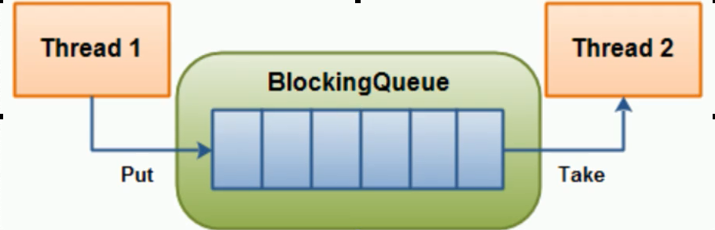
上图所示，线程1往阻塞队列中添加元素，线程二从队列中移除元素
当阻塞队列是空时，从队列中获取元素的操作将会被阻塞
当阻塞队列是满时，往队列中添加元素的操作将会被阻塞
有什么好处？
在多线程领域：所谓阻塞，在某些情况下会挂起线程（即线程阻塞），一旦条件满足，被挂起的线程会被自动唤醒。使用阻塞队列后我们不需要关心什么时候需要阻塞线程，什么时候需要唤醒线程，因为阻塞队列都给你一手包办好了。
核心方法

| 分类 | 描述 |
|---|---|
| 抛出异常 | 当阻塞队列满时,再往队列里面add插入元素会抛IllegalStateException: Queue full 当阻塞队列空时,再往队列Remove元素时候回抛出NoSuchElementException element()检查队列是否为空及队首元素是谁 NoSuchElementException |
| 特殊值 | 插入方法,成功返回true 失败返回false 移除方法,成功返回元素,队列里面没有就返回null |
| 一直阻塞 | 当阻塞队列满时,生产者继续往队列里面put元素,队列会一直阻塞直到put数据or响应中断退出 当阻塞队列空时,消费者试图从队列take元素,队列会一直阻塞消费者线程直到队列可用. |
| 超时退出 | 当阻塞队列满时,队列会阻塞生产者线程一定时间,超过后限时后生产者线程就会退出 |
种类分析
ArrayBlockingQueue: 由数组结构组成的有界阻塞队列.
LinkedBlockingQueue: 由链表结构组成的有界(但大小默认值Integer>MAX_VALUE)阻塞队列
PriorityBlockingQueue:支持优先级排序的无界阻塞队列.
DelayQueue: 使用优先级队列实现的延迟无界阻塞队列.
SynchronousQueue:不存储元素的阻塞队列,也即是单个元素的队列.
与其他BlockingQueue不同，SynchronousQueue是一个不存储元素的BlockingQueue，每个put操作必须要等待一个take操作，否则不能继续添加元素，反之亦然
1
2
3
4
5
6
7
8
9
10
11
12
13
14
15
16
17
18
19
20
21
22
23
24
25
26
27
28
29
30
31
32
33
34
35
36
37
38
39
40
41
42public class SynchronousQueueDemo {
public static void main(String[] args) {
BlockingQueue<String> blockingQueue = new SynchronousQueue<>();
new Thread(() -> {
try {
System.out.println(Thread.currentThread().getName() + "\t put 1");
blockingQueue.put("1");
System.out.println(Thread.currentThread().getName() + "\t put 2");
blockingQueue.put("2");
System.out.println(Thread.currentThread().getName() + "\t put 3");
blockingQueue.put("3");
} catch (InterruptedException e) {
e.printStackTrace();
}
}, "AAA").start();
new Thread(() -> {
try {
try {
TimeUnit.SECONDS.sleep(5);
} catch (InterruptedException e) {
e.printStackTrace();
}
System.out.println(Thread.currentThread().getName() + "\t" + blockingQueue.take());
try {
TimeUnit.SECONDS.sleep(5);
} catch (InterruptedException e) {
e.printStackTrace();
}
System.out.println(Thread.currentThread().getName() + "\t" + blockingQueue.take());
try {
TimeUnit.SECONDS.sleep(5);
} catch (InterruptedException e) {
e.printStackTrace();
}
System.out.println(Thread.currentThread().getName() + "\t" + blockingQueue.take());
} catch (InterruptedException e) {
e.printStackTrace();
}
}, "BBB").start();
}
}LinkedTransferQueue:由链表结构组成的无界阻塞队列.
LinkedBlockingDeque:由了解结构组成的双向阻塞队列.
用在哪里？
生产者消费者模式、线程池、消息中间件
传统版生产者消费者模式
1 | |
阻塞队列版生产者消费者模式
1 | |
1.6 synchronized和Lock的区别
synchronized
- synchronized是JVM层面，它是JAVA的关键字
- synchronized是不需要手动释放锁，当synchronized代码执行完以后，系统会自动让线程释放对锁的占用
- synchronized不能中断，除非是抛出了异常或者是正常执行完成
- synchronized是非公平锁
- synchronized不支持精确唤醒，只能随机唤醒或者是唤醒全部线程
lock
- Lock是API层面的具体类，它是java5以后新出的一个类
- lock就需要手动去释放锁，若没有主动的去释放锁，就可能导致死锁的现象
- lock是可以中断的，主要是设置超时的方法，
- lock默认是非公平锁，但是也支持公平锁
- lock可支持精确唤醒
Lock可以支持绑定多个Condition，进行精确唤醒，并且还可中断Lock
1、synchronized关键字
是java中的关键字，是一种同步锁，它可以修饰代码块和方法、静态方法、类。
虽然可以使用synchronized来定义方法，但是它并不属于方法定义的一部分，因此它不能被继承。如果父类中的某个方法使用了该关键字，而在子类中覆盖了该方法，在子类中的这个方法默认是不同步的，而必须显示地在子类的这个方法上添加该关键字。当然还可以在子类方法中调用父类相应的方法，这样虽然子类中的方法不是同步的，但是子类调用了父类的同步方法，因此子类的方法相当于同步了
但是对于synchronized关键字来说，获取锁的线程由于要等待IO或者其他原因被阻塞了，但是又没有释放锁，其他线程便只能等待，会影响程序的执行效率。这个时候就需要一种机制不让等待的线程一直无限期的等待下去，通过Lock可以办到
2、Lock
Lock锁实现提供了比使用同步方法和语句可以获得的更广泛的锁操作。他们允许更灵活的结构，可能具有非常不同的属性，并且可能支持多个关联的条件对象
3、区别
Lock不是java语言内置的，synchronized是java语言的关键字，因此是内置特性。Lock是一个类，通过这个类可以实现同步访问
synchronized不需要用户去手动释放锁，而Lock必须要用户手动释放，不然可能会导致出现死锁的现象
synchronized的锁可重入、不可中断、非公平，而Lock锁可重入、可中断、可公平（两种都可，在创建锁的时候设置）
4、Lock接口
1 | |
1）lock（）
用来获取锁，如果锁已经被其它线程获取，则进行等待。一般来说，lock方法必须在try catch块中进行，并且将锁释放的操作放在finally中进行，以保证锁一定被释放，防止死锁的发生
1 | |
2）newCondition
关键字synchronized与wait()/notify()这两个方法一起使用可以实现等待/通知模式，Lock锁的newContition方法返回Condition对象，也可以实现该模式
用notify通知时，JVM会随机唤醒某个等待的线程，使用Condition类可以进行选择性通知，常用的两个方法
- await（）：使当前线程等待，同时释放锁，当其他线程调用signal（）时，线程会重新获得锁并继续执行
- signal（）：用于唤醒一个等待的线程
在调用这两个方法前，需要线程持有相关的Lock锁，调用await后线程会释放这个锁，在singal调用后会从当前Condition对象的等待队列中，唤醒一个线程，唤醒的线程尝试获取锁，一旦获得锁成功就继续执行
1.7 线程间通信
一般判断部分要使用循环，防止虚假唤醒（因为唤醒的时候从哪里wait就从哪里开始唤醒，如果是用if进行判断，就会绕过if判断，因此需要循环判断）
1、线程间通信的模型有两种：共享内存和消息传递，以下方式都是基于这两种模型来实现的
1 | |
2、线程间定制化通信：A线程打印5次，B线程打印10次，C线程打印15次，按照顺序循环
1 | |
1.8 Callable接口
可以获取线程的返回结果
为实现Callable接口，需要实现在完成时返回结果的call方法，而且call方法可以引发异常，run不能
Future接口：
- 当call方法完成时，结果必须存储在主线程已知的对象中，以便主线程可以知道该线程的返回结果，因此就需要Future对象，实现该接口需要重写五个方法
public boolean cancel(boolean mayInterrupt)：用于停止任务，如果尚未启动任务它将停止任务。如果已经启动则仅在mayInterrupt为true时才会中断任务public Object get()：用于获取任务的结果，如果任务完成， 它将立即返回结果；否则等任务完成后再返回结果public boolean isDone()：如果任务完成返回true，否则返回false
FutureTask：可以通过为其构造函数提供Callable来创建FutureTask。然后将FutureTask对象提供给Thread的构造函数以创建Thread对象
重点：
- 在主线程中需要执行比较耗时的操作时，但又不想阻塞主线程，可以把这些作业交给Future对象在后台完成
- 当主线程将来需要时，可以通过Future对象获得后台作业的计算结果或者执行状态
- 一般FutureTask多用于耗时的计算，主线程可以在完成自己的任务后，再去获取结果
- 仅在计算完成时才能检索结果，如果计算尚未完成，则阻塞get方法
- 一旦计算完成，就不能再重新开始或取消计算
- get方法而获取结果只有在计算完成时获取，否则会一直阻塞直到任务转入完成状态，然后回返回结果或抛出异常
- get只计算一次，因此get方法放到最后
1
2
3
4
5
6
7
8
9
10
11
12
13
14
15
16
17
18
19
20
21
22
23
24
25
26
27
28
29//实现Callable接口
class MyCallableImpl implements Callable {
@Override
public Integer call() throws Exception {
System.out.println(Thread.currentThread().getName()+" come in callable");
return 200;
}
}
public class Demo1 {
public static void main(String[] args) throws ExecutionException, InterruptedException {
//FutureTask
FutureTask<Integer> futureTask1 = new FutureTask<Integer>(new MyCallableImpl());
//lam表达式
FutureTask<Integer> futureTask2 = new FutureTask<>(()->{
System.out.println(Thread.currentThread().getName()+" come in callable");
return 1024;
});
//创建一个线程
new Thread(futureTask1,"mary").start();
//调用FutureTask的get方法
System.out.println(futureTask1.get());
}
}
并发导致Callable接口的出现，主要是用Callable能够实现当多个任务执行当中，若有一个任务完成的耗时时间比较长，那么可以先将其他任务先完成然后等待这个耗时比较长的任务结束后一起进行总的计算。futureTask.get()操作应该放在最后，不然在计算完之前会导致阻塞强行等到计算完成。如果同一个FutureTask创建了多个线程，只会执行一次
第三章 谈谈Java锁事
3.1 乐观锁和悲观锁
悲观锁：
- 适合写操作多的场景，先加锁可以保证写操作时数据正确。
- 显示的锁定之后再操作同步资源。
- 认为自己在使用数据的时候一定有别的线程来修改数据，因此在获取的时候会先加锁，确保数据不会被别的线程修改
- synchronized关键字和Lock的实现类都是悲观锁。
乐观锁
- 乐观锁认为自己在使用数据的时候不会有别的线程修改数据，所以不会添加锁，只是在更新数据的时候去判断之前有没有别的线程更新了这个数据。
- 如果这个数据没有被更新，当前线程将自己修改的数据成功写入。如果数据已经被其他线程更新，则根据不同的实现方式执行不同的操作。
- 乐观锁在Java中是通过使用无锁编程来实现，最常采用的是CAS算法，Java原子类中的递增操作就是通过CAS自旋实现的。
- 适合读操作多的场景，不加锁的特点能使读操作的性能大幅提升。
- 也可以通过版本号的机制实现。
3.2 Java8锁事
1 | |
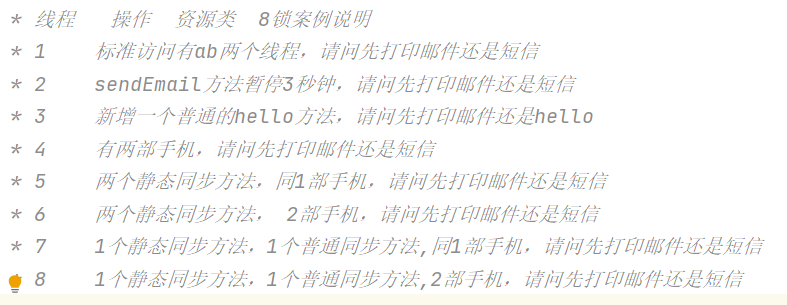
其实就是考的sync锁的是对象还是整个类，就会明白了这个。
- 作用于实例方法，当前实例加锁，进入同步代码前要获得当前实例的锁；
- 作用于代码块，对括号里配置的对象加锁。
- 作用于静态方法，当前类加锁，进去同步代码前要获得当前类对象的锁；
3.3 反编译查看synchronized实现
1、反编译同步代码块
1 | |
可以看到，synchronized实际上使用的是monitorenter和monitorexit两个指令，但是可以看到，上述的代码，两者居然不配对，这是因为得sync的底层会保证该锁最后一定会被释放。
可以手动给m1方法抛出异常
2、反编译普通同步方法
1 | |
可以看到，调用指令将会检查方法的ACC_SYNCHRONIZED访问标志是否被设置。
如果设置了，执行线程会先持有monitor然后再执行方法，最后在方法完成（无论是正常完成还是非正常完成）时释放monitor。
3、反编译静态同步方法
1 | |
ACC_STATIC, ACC_SYNCHRONIZED访问标志区分该方法是否静态同步方法
4、什么是管程monitor
面试题：synchronized实现原理，monitor对象什么时候生产的？知道monitor的monitorenter和monitorexit吗？这两个是怎么保证同步的，或者说，这两个操作计算机底层是如何执行的？
为什么任何一个对象都可以成为一个锁？
管程（Monitors，也称为监视器）是一种程序结构，结构内的多个子程序（对象或模块）形成的多个工作线程互斥访问共享资源。这些共享资源一般是硬件设备或一群变量。对共享变量能够进行的所有操作集中在一个模块中。（把信号量及其操作原语“封装”在一个对象内部）管程实现了在一个时间点，最多只有一个线程在执行管程的某个子程序。管程提供了一种机制，管程可以看做一个软件模块，他是将共享的变量和对于这些共享变量的操作封装起来，形成一个具有一定接口的功能模块，进程可以调用管程来实现进程级别的并发控制。
方法级的同步是隐式的，无需通过字节码指令来控制，它实现在方法调用和返回操作之中。虚拟机可以从方法常量池中的方法表结构中的ACC_SYNCHRONIZED访问标志得知一个方法是否被声明为同步方法。当方法调用时，调用指令会检查方法的ACC_SYNCHRONIZED访问标志是否被设置，如果设置了，执行线程就要求先成功持有管程，然后才能执行方法，最后当方法完成（无论是正常完成还是非正常完成）时释放管程。在方法执行期间，执行线程持有了管程，其他任何线程都无法再获取到同一个管程。如果一个同步方法执行期间抛出了异常，并且在方法内部无法处理此异常，那么这个同步方法所持有的管程将在异常抛到同步方法边界之外时自动释放。
- 管程是一种概念，任何语言都可以通用
- 在Java中，每个加锁的对象都绑定着一个管程
- 线程访问加锁对象，就是去拥有一个管程的过程。比如病人去医院看病，就得去找医生（公共资源），但是医生在门里面，想要访问医生，就必须拥有进入门诊室的资格（管程）。
- 所有线程想要访问共享资源，都必须先去拥有管程。
- 管程就是一个对象监视器，任何线程想要访问该资源，就要排队进入监控范围。进入之后接受检查。不符合条件就会继续等待，直到被通知，然后继续进入监视器。
同步一段指令集序列通常是由Java语言中的synchronized语句块来表示的，Java虚拟机的指令集中有monitorenter和monitorexit两条指令来支持synchronized关键字的语义，正确实现synchronized关键字需要Javac编译器与Java虚拟机两者共同协作支持。
5、C++源码解读
在HotSpot虚拟机中，monitor采用ObjectMonitor实现。
objectMonitor.hpp文件中：
| 属性名称 | 作用 |
|---|---|
| _owner | 指向持有ObjectMonitor对象的线程 |
| _WaitSet | 存放处于wait状态的线程队列 |
| _EntryList | 存放处于等待锁block状态的线程队列 |
| _recursions | 锁的重入次数 |
| _count | 用来记录该线程获取锁的次数 |
每个对象都对应一个monitor对象，在hotspot虚拟机中它是由ObjectMonitor实现的。每个对象都存在着一个monitor与之关联，对象与其monitor之间的关系存在很多种实现方式，比如monitor可以和对象一起创建销毁或当线程试图获取对象锁时自动生成，但当一个monitor被某个线程持有后，它变处于锁定状态。
ObjectMonitor中有两个队列：WaitSet和EntryList，用来保存ObjectMonitor对象列表（每个等待锁的线程都会被封装成ObjectWaiter对象），owner指向持有当前ObjectMonitor对象的线程，当多个线程同时访问同一段同步代码块的时候，首先会进入EntryList集合，当线程获取到对象的monitor之后就会进入到owner区域，并把monitor中的owner变量设置为当前线程，同时将monitor中的计数器count加1。如果该线程调用wait方法，就会释放当前持有的monitor，owner变量就会恢复成null，count自减，同时该线程就会进入WaitSet集合中等待被唤醒。如果当前线程执行完毕之后也会释放monitor，并且复位变量的值，以便其它线程进入获取monitor。
如果当前synchronized是重量级锁，即锁标识位=10，Mark word中会记录指向monitor对象的指针。
也就是说，其实每个对象天生都带有一个对象监视器；
所有对象内部都维护了一个状态，而java同步机制就是使用了对象中的状态作为了锁的标识
3.4 公平锁和非公平锁
可以参照尚硅谷面试题相关笔记
面试题
- 为什么会有公平锁和非公平锁/为什么默认非公平锁？
- 恢复挂起的线程到真正锁的获取还是有时间差的，从开发人员来看这个时间微乎其微，但是从CPU的角度来看，这个时间差存在的还是很明显的。所以非公平锁能更充分的利用CPU等待时间片，尽量减少CPU空闲时间。
- 使用多线程很重要的考量点就是线程切换的开销，当采用非公平锁时，当一个线程请求锁获取同步状态，然后释放同步状态，因为不需要考虑是否还有前驱节点，所以刚释放锁的线程在此刻再次获取同步状态的概率就变得非常大，所以就减少了线程的开销
- 使用非公平锁会有什么问题？
- 公平锁保证了排队的公平性，非公平锁霸气的忽视了这个规则，所以就有可能导致排队的长时间在排队，也没有机会获取到锁
- 也就是锁饥饿
- 什么时候使用公平锁？什么时候使用非公平锁？
- 如果为了更高的吞吐量，选择非公平锁，因为节省很多线程切换时间，吞吐量自然就上去了
- 否则就使用公平锁，大家公平使用
3.5 可重入锁
是指在同一个线程在外层方法获取到锁的时候，再进入该线程的内层方法会自动获取锁（前提是锁对象是同一个对象），不会因为之前已经获取过还没释放而阻塞
可重入锁可以一定程度上避免死锁。
synchronized的重入实现机理
- 每个锁对象拥有一个锁计数器和一个指向持有该锁的线程的指针
- 当执行monitorenter时，如果目标对象的计数器为零，那么说明它没有被其他线程所持有，Java虚拟机会将该锁对象的持有线程设置为当前线程，并且将其计数器加1.
- 在目标对象的计数器不为零的情况下，如果锁对象的持有线程是当前线程，那么Java虚拟机可以将其计数器加1，否则需要等待，直至持有线程释放该锁
- 当执行monitorexit时，Java虚拟机则需将锁对象的计数器减1，计数器为零代表锁已被释放。
3.6 死锁
死锁是指两个或两个以上的线程在执行过程中，因争夺资源而造成的一种互相等待的现象，若无外力干涉那它们都将无法推进下去，如果系统资源足够，进程的资源请求都能够得到满足，死锁出现的概率很低，否则就会因争夺有限的资源而陷入死锁。
原因：
- 系统资源不足
- 进程运行的推进顺序不合适
- 资源分配不当
死锁case
1 | |
解决方案
- jps命令定位进程编号
- jstack找到死锁查看
3.7 其他锁
写锁（独占锁）/读锁（共享锁）、自旋锁SpinLock
无锁 → 独占锁 → 读写锁 → 邮戳锁
无锁 → 偏向锁 → 轻量锁 → 重量锁
3.8 【如何用一把锁保护多个资源？】
有这么一个场景：银行业务中的转账操作，账户A减少100元，账户B增加100元，这两个操作是有关联性的。
1 | |
这个代码一看就有问题，很容易出现并发问题。如何改进？直觉就是给transfer方法加上锁：
1 | |
但是注意的是，此时虽然对转账方法加上了锁，但是临界区中是有两个资源的，分别是this.balance和target.balance，并且用的是同一把锁。不过注意的是，this这把锁可以保护自己的余额，但是保护不了别人的余额。
比如如果银行中有三个账户ABC，他们分别有200元的balance。但是此时线程1执行A转账100给B，线程2执行B转账100给C，按照正常情况，最终A剩余100元，B剩余200元，C剩余300元，但事实真的如此吗？
线程1读取到A的余额200，并且减去100，此时A为100，然后读取到B为200，并放到自己的内存空间中。此时线程2开始工作，它也读取到B为200，并且将其减去100，并且刷回主内存中，然后读取到C为200，添加100之后变成300。线程1继续开始执行，它发现自己的工作内存中B的值为200，然后加上100之后变成300并刷新会主内存，最终结果却出乎意料，A剩余100，B剩余300，C剩余300，凭空多出了100块！
为了解决这个问题，有两种方法：
- 将Account无参构造器设置为private，并且暴露出一个有参构造器，这个构造器传入一个Object类型的lock，并且设置为Account重点private Object lock。这样的话如果我们在构造每一个Account的时候，只要传入的是同一个Object，他们加的就是同一把锁。但是这样其实不够优雅，因为如果不同的Account传入的是不同的Object，那么就直接炸了。
- 直接使用Account.class作为锁。但是这样所有的转账操作都是串行化的了，对效率肯定影响非常大！
上面说到了，如果使用Account.class作为锁，这样会导致所有的操作都是串行化的。而在我们现实生活中，转账业务肯定是能够并行执行的，那么该如何编程实现呢？
首先可以想到我们使用两把锁来进行操作，我们可以先给转账方加锁，锁成功之后再给被转帐方加锁。这样就能将锁进一步细化，使用细粒度的锁可以提高并行度。
1 | |
虽然这样降低了锁的粒度，但是同样也会造成新的问题：死锁
比如线程1拿到了A的锁，同时线程2拿到了B的锁。与此同时线程1想要将A转账给B，就需要B的Account，而线程2想要将B转账给A，就需要A的Account，这就造成了死锁。
1、破坏占有并等待条件】一次性申请完所需要的资源。
可以使用一个账户管理员，由它统一分配所有的资源。
1 | |
2、破坏不可抢占条件
sycnchronized不可以做到这一点，因为它无法主动释放它占有的资源。但是可以使用Lock来做。
3、破坏循环等待条件
可以按照一定的顺序去申请资源，比如先申请id为小的再申请id为大的，这就可以避免死锁了
1 | |
上述讨论只是教我们可以往哪些方向去思考如何解决死锁问题，因为实际场景中肯定不会这么做，因为每次从数据库查出来的数据都不是同一个对象，一般实际中采用数据库事务加上乐观锁的方式解决。
同时我们注意到上面说的破坏占有并等待条件中，Account通过Allocator去同时申请所有的资源，是通过while循环去申请的，但是如果此时请求数非常大，就会导致CPU资源消耗非常严重。因此我们就可以使用等待-通知去优化我们的申请过程。
1 | |
注意的是，我们应该尽量的使用notifyAll来实现通知机制，因为如果使用notify就可能导致某些线程永远不会被通知到。
3.9 活锁和饥饿
有时线程虽然没有发生阻塞，但仍然会存在执行不下去的情况，这就是所谓的“活锁”。
可以类比现实世界里的例子，路人甲从左手边出门，路人乙从右手边进门，两人为了不相撞，互相谦让，路人甲让路走右手边，路人乙也让路走左手边，结果是两人又相撞了。这种情况，基本上谦让几次就解决了，因为人会交流啊。可是如果这种情况发生在编程世界了，就有可能会一直没完没了地“谦让”下去，成为没有发生阻塞但依然执行不下去的“活锁”。
解决“活锁”的方案很简单，谦让时，尝试等待一个随机的时间就可以了。例如上面的那个例子，路人甲走左手边发现前面有人，并不是立刻换到右手边，而是等待一个随机的时间后，再换到右手边；同样，路人乙也不是立刻切换路线，也是等待一个随机的时间再切换。由于路人甲和路人乙等待的时间是随机的，所以同时相撞后再次相撞的概率就很低了。“
等待一个随机时间”的方案虽然很简单，却非常有效，Raft 这样知名的分布式一致性算法中也用到了它。
比如上述的转装业务，双方同时为对方转账，同时进入第一个锁，但是发现获取不到第二个锁，于是释放，进入下一次循环，用的是Lock中的tryLock：比如线程1执行A向B转账，线程2执行B向A转账，线程1获取A的锁，然后想去获取B的锁，同时线程2获取了B的锁想去获取A的锁，发现都获取不到，因此同时释放自己已经获得了的锁，然后进入下一轮循环后又是这样，因此出现了活锁。
所谓“饥饿”指的是线程因无法访问所需资源而无法执行下去的情况。
“不患寡，而患不均”，如果线程优先级“不均”，在 CPU 繁忙的情况下，优先级低的线程得到执行的机会很小，就可能发生线程“饥饿”；持有锁的线程，如果执行的时间过长，也可能导致“饥饿”问题。
解决“饥饿”问题的方案很简单，有三种方案：一是保证资源充足，二是公平地分配资源，三就是避免持有锁的线程长时间执行。这三个方案中，方案一和方案三的适用场景比较有限，因为很多场景下，资源的稀缺性是没办法解决的，持有锁的线程执行的时间也很难缩短。倒是方案二的适用场景相对来说更多一些。
那如何公平地分配资源呢？在并发编程里，主要是使用公平锁。所谓公平锁，是一种先来后到的方案，线程的等待是有顺序的，排在等待队列前面的线程会优先获得资源。
3.10 建议
第一，既然使用锁会带来性能问题，那最好的方案自然就是使用无锁的算法和数据结构了。在这方面有很多相关的技术，例如线程本地存储 (Thread Local Storage, TLS)、写入时复制 (Copy-on-write)、乐观锁等；Java 并发包里面的原子类也是一种无锁的数据结构；Disruptor 则是一个无锁的内存队列，性能都非常好……
第二，减少锁持有的时间。互斥锁本质上是将并行的程序串行化，所以要增加并行度，一定要减少持有锁的时间。这个方案具体的实现技术也有很多，例如使用细粒度的锁，一个典型的例子就是 Java 并发包里的 ConcurrentHashMap，在1.7的时候使用到的分段锁，同时1.8的时候只锁数组中的一个节点；还可以使用读写锁，也就是读是无锁的，只有写的时候才会互斥。
- 永远只在更新对象的成员变量的时候加锁
- 永远只在访问可变的成员变量的时候加锁
- 永远不要在调用其它对象方法的时候加锁
第四章 LockSupport与线程中断
4.1 线程中断机制
4.1.1、阿里蚂蚁金服面试题
如何停止、中断一个运行中的线程？
4.1.2、什么是中断？
- 首先一个线程不应该由其他线程赖强制中断或停止，而是应该由线程自己自行停止。所以Thread.stop, Thread.suspend, Thread.resume都已经被废弃了。
- 其次在Java中没有办法立即停止一条线程，然而停止线程却显得尤为重要，如取消一个耗时操作。因此，Java提供了一种用于停止线程的机制 — 中断
- 中断只是一种协作机制，Java没有给中断增加任何语法，中断的过程完全需要程序员自己实现。
- 若要中断一个线程，你需要手动调用该线程的interrupt方法，该方法也仅仅是将线程对象的中断标识设置为true；接着你需要自己写代码不断地检测当前线程的标识位，如果为true，表示别的线程要求这条线程中断，此时究竟该做什么需要你自己写代码实现。
- 每个线程对象都有一个标识，用于表示该线程是否被中断；该标识位为true为中断，false表示未中断；通过调用线程对象的interrupt方法将该线程的标识位设为true；可以在别的线程中调用，也可以在自己的线程中调用。
4.1.3、中断的相关API
| API | 作用 |
|---|---|
| public void interrupt() | 实例方法，仅仅是设置线程的中断状态true，不会停止线程。 |
| public static boolean interupted | 静态方法，Thread.interrupted()； 判断线程是否被中断，并清除当前状态 该方法做了两件事 1、返回当前线程的中断状态 2、将当前线程的中断状态设置为false |
| public boolean isInterrupted | 判断当前线程是否被中断（通过检查中断标志位） |
4.1.3.1 interrupt源码分析
1 | |
如上图注释所示，如果该线程被wait、join、sleep方法给阻塞了，调用该方法就会爆出异常。
4.1.3.2 isInterrupted源码分析
调用的是本地方法。
4.1.4、如何使用中断标识停止线程
在需要中断的线程中不断监听中断状态，一旦发生中断，就执行相应的中断处理业务逻辑。
4.1.4.1 使用volatile来实现
1 | |
4.1.4.2 通过AtomicBoolean
1 | |
4.1.4.3 使用Thread自带的api
1 | |
4.1.5、当前线程的中断标识为true，是不是就立刻停止？
具体来说，当对一个线程，调用interrupt时
- 如果线程处于正常活动状态，那么会将该线程的中断标志设为true，仅此而已；被设置中断标志的线程将继续正常运行，不受影响。所以interrupt并不能真正的中断线程，需要被调用的线程自己进行配合才行。
- 如果线程处于被阻塞状态（例如处于sleep、wait、join等状态），在别的线程池中调用当前线程对象的interrupt方法，那么线程将立即退出被阻塞状态，并抛出一个InterruptedException异常。
1 | |
运行结果如下：
1 | |
可以看到，该线程的标志位被设置为true，并没有立即退出线程
再看下面一个案例：
1 | |
需要注意的是sleep方法抛出异常后，中断标识也会被清空重置为false，我们在catch如果没有调用th.interrupt方法再次将中断标识设置为true，这就导致无限循环了。
4.1.6、小总结
中断只是一种协同机制，修改中断标识位而已，不是立即stop打断该线程。
4.2 线程等待唤醒机制
JUC中有三种线程等待唤醒机制：
- 使用Object中的wait方法让线程等待，使用Object中的notify方法唤醒线程
- 使用JUC包中Condition的await方法让线程等待，使用signal方法唤醒线程
- LockSupport类可以阻塞当前线程以及唤醒指定被阻塞的线程
4.2.1、Object和Condition限制条件
- 线程必须先要获得并持有锁，必须在锁块（synchronized或lock）中
- 必须要先等待后唤醒，线程才能够被唤醒。
4.2.2、LockSupport
- LockSupport是用来创建锁和其他同步类的基本线程阻塞原语
- LockSupport中的park()和unpart（）的作用分别是阻塞线程和解除阻塞线程
- 通过part()和unpark（thread）方法来实现阻塞和唤醒线程的操作
- LockSupport类使用了一种名为Permit（许可）的概念来做到阻塞和唤醒线程的功能，每个线程都有一个许可，permit只有两个值，1和0。可以把许可看成是一种（0，1）信号量（Semaphore），但是许可的累加上限是1
1 | |
permit默认为0，所以一开始调用park()方法，当前线程就会阻塞，直到别的线程将当前线程的permit设置为1时，park方法会被唤醒，然后将permit再次设置为0并返回
1 | |
调用unpark方法后，就会将thread线程的许可permit设置为1（注意多次调用unpark方法不会累加，permit值还是1）会自动唤醒thread线程，即之前阻塞中的LockSupport.part()方法会立即返回
如果先执行unpart，那么permit就会被设置为1，那么后面再执行park的时候，就相当于park方法不存在，形同虚设，因此不会产生阻塞。
1 | |
重点说明
LockSupport是用来创建锁和其他同步类的基本线程阻塞原语
LockSupport是一个线程阻塞工具类，所有的方法都是静态方法，可以让线程在任意位置阻塞，阻塞之后也有对应的唤醒方法。归根结底，LockSupport调用的Unsafe中的native代码。
LockSupport提供park()和unpark()方法实现阻塞线程和解除线程阻塞的过程
LockSupport和每个使用它的线程都有一个许可(permit)关联。permit相当于1，0的开关，默认是0，调用一次unpark就加1变成1，调用一次park会消费permit，也就是将1变成0，同时park立即返回。
如再次调用park会变成阻塞(因为permit为零了会阻塞在这里，一直到permit变为1)，这时调用unpark会把permit置为1。
每个线程都有一个相关的permit, permit最多只有一个，重复调用unpark也不会积累凭证。
形象的理解
线程阻塞需要消耗凭证(permit)，这个凭证最多只有1个。
当调用park方法时
- 如果有凭证，则会直接消耗掉这个凭证然后正常退出;
- 如果无凭证，就必须阻塞等待凭证可用;
而unpark则相反，它会增加一个凭证，但凭证最多只能有1个，累加无效。
4.2.3、LockSupport相关面试题
为什么可以先唤醒线程后阻塞线程
因为unpark获得了一个凭证，之后再调用park方法，就可以名正言顺的凭证消费，故不会阻塞
为什么唤醒两次后阻塞两次，但最终结果还会阻塞线程？
因为凭证的数量最多为1，连续调用两次unpark和调用一个unpark效果一样，只会增加一个凭证；而调用两次park却需要消费两个凭证
第五章 JMM内存模型
5.1、相关面试题
- 你知道什么是Java内存模型JMM吗
- JMM与volatile它们两个之间的关系？
- JMM有哪些特性或者它的三大特性是什么？
- 为什么要有JMM，它为什么出现？作用和功能是什么
- happens-before先行发生原则你有了解过吗？
5.2 计算机硬件存储体系
计算机存储结构，从本地磁盘到主存到CPU缓存，也就是从硬盘到内存，到CPU。一般对应的程序的操作就是从数据库查数据到内存中后到CPU进行计算。
CPU、内存、I/O之间的速度差异导致一系列问题的发生，解决的办法就是在CPU和内存之间添加多级缓存、CPU和IO增加多线程并行处理、多核CPU等措施。
- CPU增加了缓存，用来均衡和内存之间的速度差异【导致可见性】
- 操作系统添加了进程、线程，以时分复用CPU，进而均衡CPU和IO设备的速度差异。【导致原子性】
- 编译程序优化指令执行顺序，使得缓存能够得到更加合理地利用。【导致有序性】
高速缓存的出现是为了解决CPU运算速度与内存读写速度不匹配的矛盾，因为CPU运算速度要比内存读写速度快很多，这样会使CPU花费很长时间等待数据到来或把数据写入内存。在缓存中的数据是内存中的一小部分，但是这一小部分是短时间内CPU即将访问的，当CPU调用大量数据时，就可以先在缓存中调用，从而加快读取速度。
距离CPU最近的是三级高速缓存，L1最快，读取的是内存的100倍左右，可以理解为2-4个时钟周期（内存读取200-300时钟周期），L2是10-20个时钟周期左右，L1和L2是核心隔离的，L3为20-60时钟周期，是核心共享的，大小方面L1<L2<L3。而CPU缓存、寄存器以及内存也是JMM的硬件基础。
- 一级缓存都内置在CPU内部并与CPU同速运行，可以有效的提高CPU的运行效率。一级缓存越大CPU的运行效率越高，但是受到CPU内部结构的限制，一级缓存的容量都很小。
- 二级缓存是为了协调一级缓存和内存之间的速度。CPU调用缓存首先是一级缓存，当处理器的速度逐渐提升，会导致一级缓存供不应求，这样就得使用到二级缓存了。二级缓存它比一级缓存的速度相对来说会慢，但是它比一级缓存的空间容量要大。主要是做一级缓存和内存之间数据临时交换的地方用。
- 三级缓存为了读取二级缓存后未命中的数据设计的一种缓存，在拥有三级缓存的CPU中，只有约5%的数据需要从内存中调用，这进一步提高了CPU的效率。原理其实就是如果二级缓存未命中，就去三级缓存中查找，如果三级缓存未命中再去内存中查找。
因为有这么多级的缓存（CPU和物理主内存的速度不一致的），CPU的运行并不是直接操作内存，而是先把内存里边的数据读到缓存，而内存的读和写操作的时候就会造成不一致的问题，比如一致性、可见性、原子性等问题
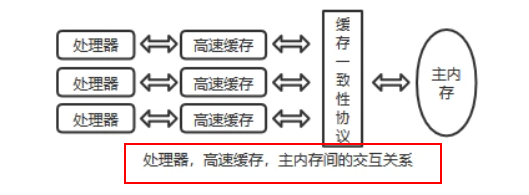
Java虚拟机规范中试图定义一种Java内存模型（Java Memory Model，简称JMM）来屏蔽掉各种硬件和操作系统的内存访问差异，以实现让Java程序在各种平台下都能达到一致的内存访问效果。
5.3 JMM相关基本概念
Java内存模型，Java Memory Model，简称JMM，本身是一种抽象的概念，并不真实存在，它描述的是一组规则或规范。通过规范定制了程序各个变量（包括实例字段、静态字段和构成数组对象的元素）的读写访问方式并决定一个线程对共享变量的写入何时以及如何变成对另一个线程可见，关键技术都是围绕多线程的原子性、可见性和有序性展开的。
原则：JMM的关键技术点都是围绕多线程的原子性、可见性和有序性展开的
能干嘛
- 通过JMM来实现线程和主内存之间的抽象关系
- 屏蔽各个硬件平台和操作系统的内存访问差异以实现让Java程序在各种平台下都能达到一致的内存访问效果。
5.4 三大特性
JMM关于同步规定：①、线程解锁前， 必须把共享变量的值刷新回主内存；②、线程加锁前， 必须读取主内存的最新值到自己的工作内存；③、加锁解锁是同一把锁
由于JVM运行程序的实体是线程，而每个线程创建时JVM都会为其创建一个工作内存（有些地方称为栈空间），工作内存是每个线程的私有数据区域，而Java内存模型中规定所有变量都存储在主内存（电脑装的内存条，硬件）中，主内存是共享内存区域，所有线程都可以访问，但是线程对变量的操作（读取赋值等）必须在工作内存中进行，首先要将变量从主内存拷贝到自己的工作空间，然后对变量进行操作，操作完成再将变量写回主内存中，不能直接操作主内存中的变量，各个线程中的工作内存储着主内存中的变量副本拷贝，因此不同的线程无法访问对方的工作内存，此案成间的通讯（传值）必须通过主内存来完成
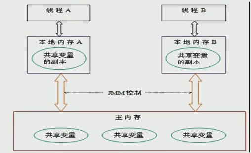
1、JMM可见性
通过前面对JMM的介绍，我们知道各个线程对主内存中共享变量的操作都是各个线程各自拷贝到自己的工作内存中，操作后再写回主内存中的。
这就可能存在一个线程AAA修改了共享变量X的值，还未写回主内存中时，另外一个线程BBB又对内存中的一个共享变量X进行操作，但此时AAA线程工作内存中的共享变量X对BBB来说并不可见，这种工作内存与主内存同步延迟现象就造成了可见性的问题。
1 | |
就比如上述代码，如果两个线程同时对同一个变量进行操作，就会导致出现可见性问题，最终输出的count的值是一万到两万之间的值。
因此就必须要有一种机制，只要有一个线程修改完自己的工作内存中的值，并写回给主内存以后要及时通知其他线程，这种即时通知就是JMM中的可见性。
代码示例如下
1 | |
AAA线程拿到副本进行操作，几乎同时主线程也拿到了number的副本进行while循环，当AAA三秒之后将number修改为60，随后写入内存中，但是此时主线程还是使用自己的内存空间中的number副本，因此循环继续。
如果给while语句前面添加上延迟时间，保证while拿到数据的时候AAA线程已经完成了修改并写入主内存，那么while拿到的就是number修改之后的值
2、JMM原子性
什么是原子性？其实就是看最终一致性能不能保证。不可分割、完整性。即某个线程正在做某个业务的时候，中间不可以被加塞或者被分割，需要整体完整。
在以前的操作系统，是基于进程来调度CPU的，但是不同进程之间是不共享内存空间的，所以进程要做任务切换就需要切换内存映射地址，而一个进程创建的所有的线程都是共享一个内存空间的，所以线程做内存切换的成本就很低了。现代的操作系统都基于更加轻量的线程来调度，所以“任务切换”都是指“线程切换”。
正是这种线程间的切换，导致了并发编程中的诡异BUG出现，也就是没有保证原子性
JMM要求保证原子性，但是volatile是不保证原子性的。
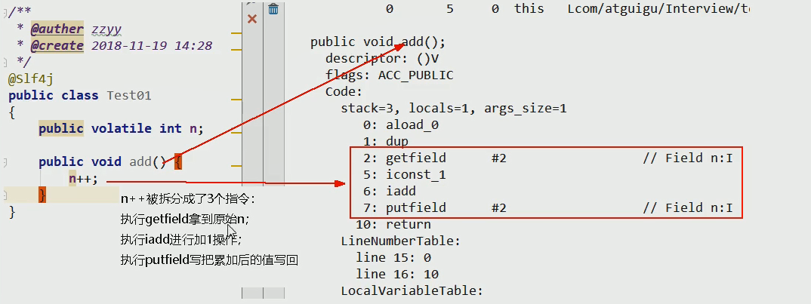
number++在多线程的情况下是非线程安全的，除了加synchronized以外，还能通过AtomicInteger来解决。
为什么number++无法保证线程安全？因为很多值在putfield这步写回主内存的时候可能线程的调度被挂起了，刚好也没有收到最新值的通知，有那么一个纳秒级的时间差，一写就出现了写覆盖，将之前的值给覆盖掉了。
1 | |
AtomicInteger（带原子性包装的整形类）的底层原理：CAS
3、JMM有序性
对于一个线程的执行代码而言，我们总是习惯性认为代码的执行总是从上到下，有序执行。
但是计算机在执行程序时，为了提高性能，编译器和处理器常常会做指令重排，一般分为一下3种
指令重排可以保证串行语义一致，但是没有义务保证多线程间的语义也一致，即可能产生“脏读“，简单说，两行以上不相干的代码在执行的时候有可能先执行的不是第一条，执行顺序会被优化。
- 单线程环境里面确保程序最终执行结果和代码顺序执行结果一致
- 处理器在进行重新排序时必须要考虑指令之间的数据依赖性
- 多线程环境中线程交替执行，由于编译器优化重排的存在，两个线程使用的变量能否保持一致性是无法确定的，结果无法预测
4、小总结
- 我们定义的所有共享变量都存储在物理主内存中。
- 每个线程都有自己独立的工作内存，里面保存该线程使用到的变量的副本（主内存中该变量的一份拷贝）
- 线程对共享变量所有的操作都必须在线程自己的工作内存中进行后写回主内存，不能直接从主内存中读写（不能越级）
- 不同线程之间也无法直接访问其他线程的工作内存中的变量，线程间变量值的传递需要通过主内存来进行（同级不能相互访问）
5.5 happens-before
在JMM中，如果一个操作执行的结果需要对另一个操作可见性或者代码重排序，那么这两个操作之间必须存在happens-before关系。
如果仅仅看翻译：先行发生原则，但是它并不是说前面一个操作发生在后续操作的前面，它的真正意思是：前面一个操作的结果对后续操作是可见的。
案例：如果线程A执行x = 5， 线程B执行y = x，那么 y是否等于5呢？
如果线程A的操作先行发生线程B的操作，那么可以确定线程B执行后y=5一定成立；如果它们不存在happens-before原则，那么不一定成立；这就是happens-before原则的威力→包含可见性和有序性的约束
先行发生原则说明
如果Java内存模型中所有的有序性都仅靠volatile和synchronized来完成，那么有很多操作都将会变得非常啰嗦。但是我们在编写Java并发代码的时候并没有察觉到这一点。
我们没有时时刻刻添加volatile和synchronized来完成程序，这是因为Java语言中JMM原则下，有一个先行发生原则限制和规矩
它是判断数据是否存在竞争，线程时候安全的非常有用的手段。依赖这个原则，我们可以通过几条简单规则一揽子解决并发环境下两个操作之间是否可能存在冲突的所有问题，而不需要陷入JMM苦涩难懂的底层编译原理中。
总原则：
- 如果一个操作happens-before另一个操作，那么第一个操作的执行结果将对第二个操作可见，而且第一个操作的执行顺序排在第二个操作之前。
- 两个操作之间存在先行发生原则，并不意味着一定要按照该原则制定的顺序来执行。如果重排序之后的执行结果与按照先行发生原则来执行的结果一致，那么这种重排序并不非法。
8条原则
次序规则
- 一个线程内，按照代码顺序，写在前面的操作先行发生与写在后面的操作；
- 前一个操作的结果可以被后续的操作获取。讲白点就是前面一个操作把变量x赋值为1，那么后面一个操作肯定能知道x已经变成了1.
锁定规则：
一个unLock操作先行发生于后面（这里的后面指的是时间上的先后）对同一个锁的lock操作。
public class HappenBeforeDemo{ static Object objectLock = new Object(); public static void main(String[] args) throws InterruptedException { //对于同一把锁objectLock，threadA一定先unlock同一把锁后B才能获得该锁， A 先行发生于B synchronized (objectLock){ } } }1
2
3
4
5
6
7
8
9
10
11
12
13
14
15
16
17
18
19
20
21
22
23
24
25
26
27
28
29
30
31
32
33
34
35
36
3. **volatile变量规则：**
- 对一个volatile变量的写操作先行发生于后面对这个变量的读操作，**前面的写对后面的读是可见的**，这里的后面指的是时间上的先后。
4. **传递原则：**
- 如果操作A先行发生于操作B，而操作B又先行发生于操作C，则可以得出操作A先行发生于操作C
5. **线程启动规则（Thread Start Rule）：**
- Thread对象的start方法先行发生于此线程的每一个动作。
- 主线程A启动子线程B，子线程B能够看到主线程在启动子线程B之前的所有操作。
6. **线程中断规则（Thread Interruption Rule）：**
- 对线程interrupt方法的调用先行发生于被中断线程的代码检测到中断事件的发生；
- 可以通过Thread.interrupted检测到是否发生中断。
7. **线程终止规则（Thread Termination Rule）：**
- 线程中的的所有操作都可以先行发生于对此线程的终止检测，我们可以通过Thread::join方法是否结束、Thread::isAlive的返回值等手段检测线程是否已经终止执行。
```java
Thread B = new Thread(()->{
// 此处对共享变量var修改
var = 66;
});
// 例如此处对共享变量修改，
// 则这个修改结果对线程B可见
// 主线程启动子线程
B.start();
B.join()
// 子线程所有对共享变量的修改
// 在主线程调用B.join()之后皆可见
// 此例中，var==66
对象终结规则（Finalizer Rule）：
- 一个对象的初始化完成（构造函数执行结束）先行发生于它的finalize方法的开始
- 也就是对象没有完成初始化之前，是不能调用finalized方法的。
5.6 sync和Lock的可见性
我们都知道，synchronized和Lock都能够保证可见性，那么如何从happens-before的角度看待它们的可见性？
sync：首先根据锁定原则，一个锁的unlock操作一定先行发生于它后续的lock操作。假设当线程a释放锁后，线程b拿到了锁并且开始执行代码块中的代码时，线程b必然能够看到线程a看到的所有结果，所以synchronized能够保证线程间数据的可见性。
lock：将其简化可得如下代码：
1 | |
使用volatile变量原则，对一个volatile的写操作一定happens-before于对该volatile变量的读操作。
当线程b执行获取锁的操作，读取了state变量之后，线程a在写入state变量（即解锁）之前的任何操作结果都是对线程b是可见的。
第六章 volatile
6.1 volatile是什么
volatile是Java虚拟机提供的轻量级的同步机制，基本上遵循了JMM的规范，它有三大特性：保证可见性、不保证原子性、禁止指令重排。
- 当写一个volatile变量时，JMM会把该线程对应的本地内存中的共享变量值立即刷新回主内存中。
- 当读一个volatile变量时，JMM会把该线程对应的本地内存设置为无效，直接从主内存中读取共享变量
- 所以volatile的写内存语义是直接刷新到主内存中，读的内存语义是直接从主内存中读取。
6.2 内存屏障
内存屏障（也称内存栅栏，内存栅障，屏障指令等，是一类同步屏障指令，是CPU或编译器在对内存随机访问的操作中的一个同步点，使得此点之前的所有读写操作都执行后才可以开始执行此点之后的操作），避免代码重排序。内存屏障其实就是一种JVM指令，Java内存模型的重排序规则会要求Java编译器在生成JVM指令时插入特定的内存屏障指令，通过这些指令，volatile实现了Java内存模型中的可见性和有序性，但是volatile无法保证原子性。
- 内存屏障之前的写操作都要回写到主内存。
- 内存屏障之后的所有读操作都能获得内存屏障之前的所有写操作的最新结果（实现了可见性）
因此重排序时，不允许把内存屏障之后的指令重排序到内存屏障之前。
一句话：对一个volatile域的写，先行发生于任意后续对这个volatile域的读，也叫写后读。
也就是说，volatile凭什么保证可见性和有序性？就是因为内存屏障
JMM提供了四类内存屏障指令：
查看Unsafe.class：
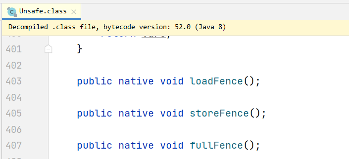
它的底层其实就是Unsafe.cpp类
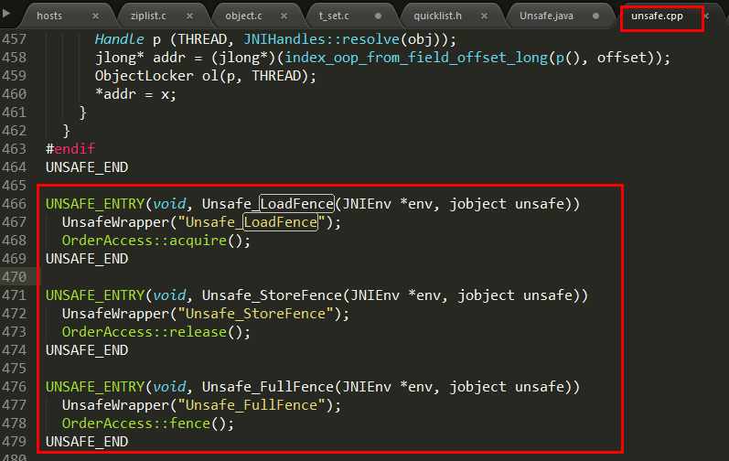
再看OrderAccess.hpp类：
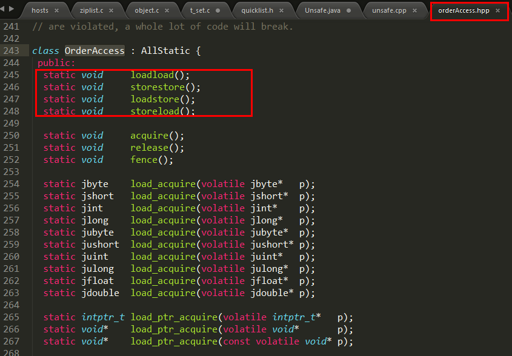
orderAccess_linux_x86.inline.hpp：
那么所谓的四大屏障分别是什么意思呢？
| 屏障类型 | 指令示例 | 说明 |
|---|---|---|
| LoadLoad | Load1；LoadLoad；Load2 | 保证Load1的读取操作在Load2及后续读取操作之前执行 |
| StoreStore | Store1；StoreStore；Store2 | 在Store2及其后的写操作执行前，保证store1的写操作已经刷新到主内存 |
| LoadStore | Load1；LoadStore；Store2 | 在store2及其后的写操作执行前，保证load1的读操作已经读取结束 |
| StoreLoad | Store1；StoreLoad；Load2 | 保证store1的写操作已经刷新到主内存之后，load2及其后的读操作才能执行 |
进一步加深理解：
先行发生原则之volatile变量规则如下所示：
- 当第一个操作为volatile读时，不论第二个操作是什么，都不能重排序。这个操作保证了volatile读之后的操作不会被重排到volatile读之前。
- 当第二个操作为volatile写时，不论第一个操作是什么，都不能重排序。这个操作保证了volatile写之前的操作不会被重排到volatile写之后。
- 当第一个操作为volatile写时，第二个操作为volatile读时，不能重排。
可以根据此来看为什么JMM要有四个内存屏障
- 在每个volatile写操作的前面插入一个StoreStore屏障
- 在每个volatile写操作的后面插入一个StoreLoad屏障
- 在每个volatile读操作的后面插入一个LoadLoad屏障
- 在每个volatile读操作的后面插入一个LoadStore屏障

6.3 volatile特性
禁止指令重排小总结（了解）
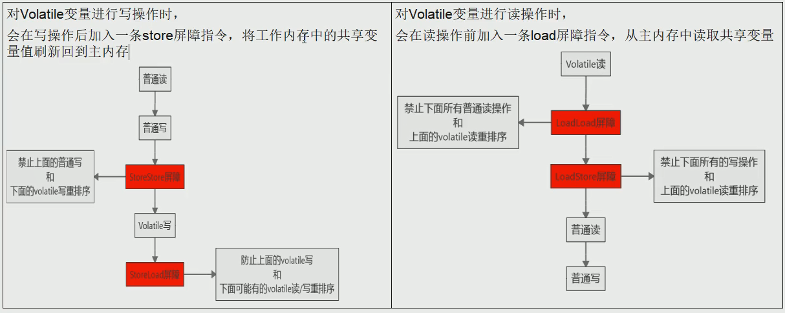
volatile使用案例
单例模式DCL代码
1 | |
但是DCL（双端检锁）机制不一定线程安全，原因是有指令重排的存在，加入volatile可以禁止指令重排，原因在于某一个线程在执行到第一次检测，读取到的instance不为null时，instance的引用对象可能没有完成初始化
instance = new SingletonDem(); 可以分为以下步骤（伪代码）
- 分配对象内存空间 memory = allocate();
- 在分配的空间上初始化对象 instance(memory);
- 设置instance指向刚分配的内存地址，此时instance != null
步骤2和步骤3不存在数据依赖关系，而且无论重排前还是重排后程序执行的结果在单线程中并没有改变，因此这种重排优化是允许的。
但是如果多线程情况下进行了重排优化，可能第三步先执行，此时对象还没初始化完，所以当一条线程访问instance不为null时，由于instance实例未必完成初始化，也就造成了线程安全问题。

因此我们可以加上volatile来禁止指令重排，就能保证多线程间的语义一致性，private static volatile SingletonDemo instance = null。
6.4 拓展：单例的另一种实现
1 | |
第七章 CAS
7.1 CAS
CAS：比较并交换，如果线程的期望值跟物理内存的真实值一样，就更新值到物理内存中，并返回true；如果线程的期望值跟物理内存的真实值不一样，返回false，本次修改失败，那么此时需要重新获得主物理内存的新值。
CASDemo代码
1 | |
1、UnSafe
对于atomicInteger.getAndIncrement()方法的源代码
1 | |
可以看到getAndIncrement方法底层用的是unsafe类中的方法
下面是AtomicInteger的部分源码
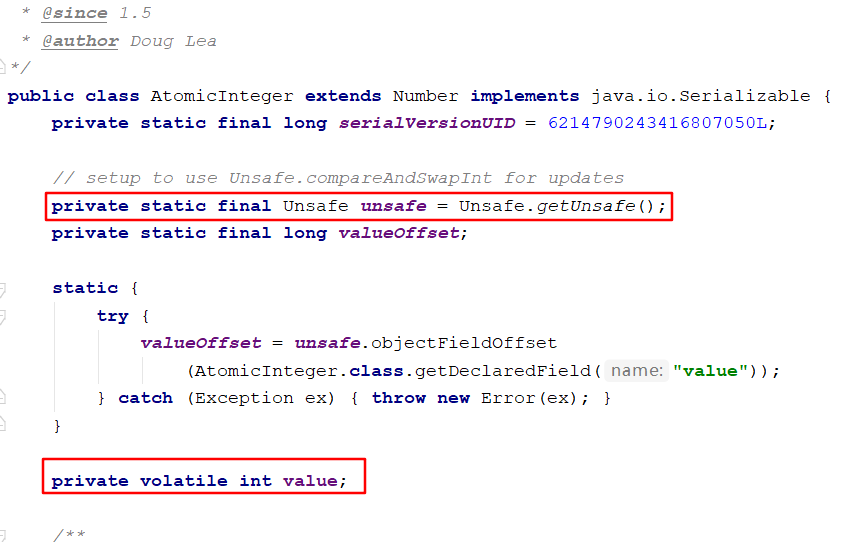
UnSafe是CAS的核心类，由于Java方法无法直接访问底层，需要通过本地（native）方法来访问，UnSafe相当于一个后门，基于该类可以直接操作特定的内存数据。UnSafe在sun.misc包中，其内部方法操作可以像C的指针一样直接操作内存。
注意UnSafe类中的所有方法都是native修饰的，也就是说UnSafe类中的方法都是直接调用操作底层资源执行响应的任务
变量valueOffset就是该变量在内存中的偏移地址，因为UnSafe就是根据内存偏移地址来获取数据的。
变量vlaue用volatile修饰，保证了多线程之间的可见性
2、什么是CAS
CAS的全称就是Compare-And-Swap，它是一条CPU并发原语，它的功能是判断内存某个位置的值是否为预期值，如果是则更新为新的值，这个过程是原子的。
CAS并发原语体现在Java语言中就是UnSafe类中的各个方法，调用UnSafe类中的CAS方法，JVM会帮我们实现CAS汇编指令，这是一种完全依赖于硬件功能，通过它实现了原子操作，再次强调，由于CAS是一种系统原语，原语属于操作系统用语范畴，用于完成某个功能的一个过程，并且原语的执行必须是连续的，在执行过程中不允许中断，也就是说CAS是一条原子指令，不会造成所谓的数据不一致问题
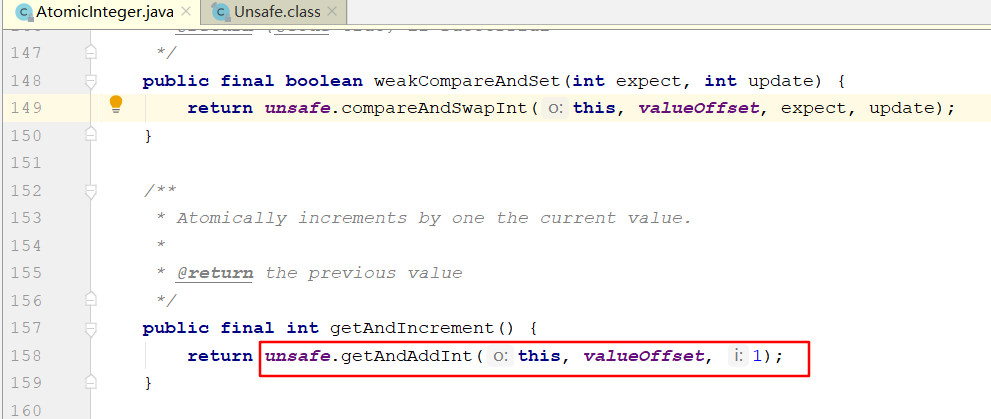
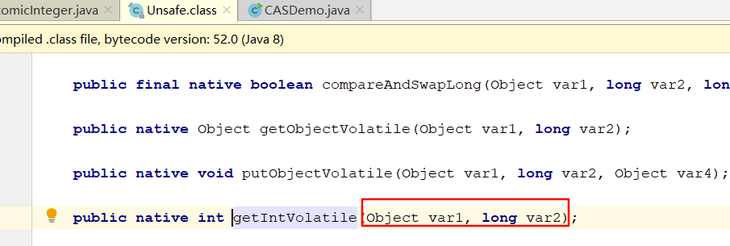
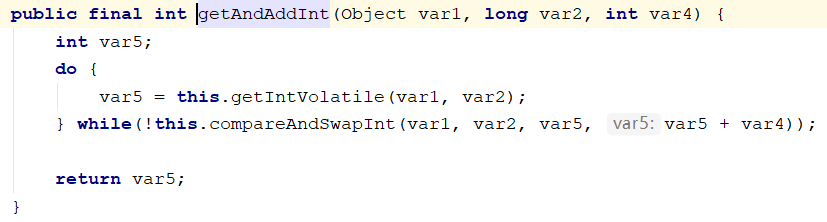
var1 AtomicInteger对象本身.
var2 该对象值的引用地址
var4 需要变动的数值
var5 是用过var1 var2找出内存中绅士的值
用该对象当前的值与var5比较
如果相同,更新var5的值并且返回true；如果不同,继续取值然后比较,直到更新完成
假设线程A和线程B两个线程同时执行getAndAddInt操作(分别在不同的CPU上):
1.AtomicInteger里面的value原始值为3,即主内存中AtomicInteger的value为3,根据JMM模型,线程A和线程B各自持有一份值为3的value的副本分别到各自的工作内存.
2.线程A通过getIntVolatile(var1,var2) 拿到value值3,这是线程A被挂起.
3.线程B也通过getIntVolatile(var1,var2) 拿到value值3,此时刚好线程B没有被挂起并执行compareAndSwapInt方法比较内存中的值也是3 成功修改内存的值为4 线程B打完收工 一切OK.
4.这是线程A恢复,执行compareAndSwapInt方法比较,发现自己手里的数值和内存中的数字4不一致,说明该值已经被其他线程抢先一步修改了,那A线程修改失败,只能重新来一遍了.
5.线程A重新获取value值,因为变量value是volatile修饰,所以其他线程对他的修改,线程A总是能够看到,线程A继续执行compareAndSwapInt方法进行比较替换,直到成功.
原子整型之所以在i++这种多线程的环境下面，不用加synchronized，就凭借着底层UnSafe类也能保证原子性，来保证线程安全，是因为UnSafe是CAS的核心类，且UnSafe是根据内存偏移地址来获取的。
3、CAS的缺点
- 多次比较循环时间长开销很大：如果CAS失败的话，会一直进行尝试，如果CAS长时间一直不成功，可能会给CPU带来很大的开销
- 只能保证一个共享变量的原子性：当对一个共享变量执行操作时，我们可以使用循环CAS的方式来保证原子操作，但是对多个共享变量操作时，循环CAS就无法保证操作的原子性，这时候就可以用锁来保证原子性
- 引出来ABA问题
也就是说，如果使用synchronized进行加锁，一致性得到保证，但是并发性会下降；如果使用CAS，不加锁，能保证一致性，但是它需要多次比较，耗时时间长，开销很大。
7.2 ABA问题
1、ABA问题的产生
CAS会导致ABA问题，CAS算法实现一个重要前需要取出内存中某个时刻的数据并在当下时刻比较并替换， 那么在这个时间差内会导致数据的变化。
比如说一个线程one从内存位置V中取出A，这时候另一个线程two也从内存位置V中取出A，并且线程two进行了一些操作将值变成了B，然后线程two又将B变成了A，这个时候one进行CAS操作发现内存中仍然是A，然后线程one操作成功
尽管one的CAS操作成功，但是不代表这个过程就是没有问题的
2、原子引用：AtomicReference
1 | |
原子引用的用法其实和AtomicInteger差不多，只是可以自定义CAS操作对象，且这个同样也有ABA问题
3、时间戳原子引用：AtomicStampedReference
1 | |
这个可以规避掉ABA问题，就是新增一种机制，那就是增加时间戳，当时间戳跟要比对的时间戳不一致的话，就说明这个数据在中间被修改过
第八章 原子操作类之18罗汉增强
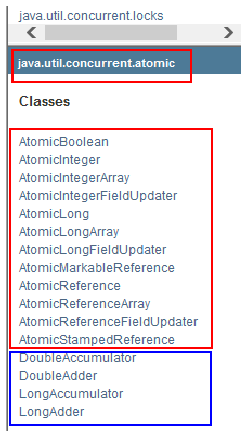
8.1 基本类型原子类
AtomicInteger、AtomicBoolean、AtomicLong
常用API简介：
- public final int get() //获取当前的值
- public final int getAndSet(int newValue)//获取当前的值，并设置新的值
- public final int getAndIncrement()//获取当前的值，并自增
- public final int getAndDecrement() //获取当前的值，并自减
- public final int getAndAdd(int delta) //获取当前的值，并加上预期的值
- boolean compareAndSet(int expect, int update) //如果输入的数值等于预期值，则以原子方式将该值设置为输入值（update）
1 | |
8.2 数组类型原子类
AtomicIntegerArray、AtomicLongArray、AtomicReferenceArray
1 | |
8.3 引用类型原子类
1、AtomicReference：
1 | |
也可以使用AtomicReference来实现自旋锁：
1 | |
2、AtomicStampedReference
携带版本号的引用类型原子类，可以解决ABA问题，示例代码见第七章ABA问题
解决修改过几次
3、AtomicMarkableReference
原子更新带有标记位的引用类型对象，它的定义就是将状态戳简化为true|false，类似一次性筷子
解决是否被修改
1 | |
8.4 对象的属性修改原子类
AtomicIntegerFieldUpdater：原子更新对象中int类型字段的值
AtomicLongFieldUpdater：原子更新对象中Long类型字段的值
AtomicReferenceFieldUpdater：原子更新引用类型字段的值
使用目的：以一种线程安全的方式操作非线程安全对象内的某些字段
有什么用呢？一般我们加锁都是锁定整个对象，但是我们使用对象的属性修改原子类，可以减少锁定的范围，只关注长期、敏感性变化的某一个字段，而不是整个对象，已达到精确加锁 + 节约内存的目的；类似医生的微创手术，不用麻痹全身
使用要求：更新的对象属性必须使用 public volatile 修饰符。因为对象的属性修改类型原子类都是抽象类，所以每次使用都必须使用**静态方法newUpdater()**创建一个更新器，并且需要设置想要更新的类和属性。
AtomicIntegerFieldUpdaterDemo：
1 | |
AtomicReferenceFieldUpdaterDemo
这个同样可以实现单例模式：多线程并发调用一个类的初始化方法，如果未被初始化过，将执行初始化工作，要求只能初始化一次
1 | |
8.5 （重点）原子操作增强类原理深度解析
1、基本概念
DoubleAccumulator、DoubleAdder、LongAccumulator、LongAdder
除了解决第八章开头的volatile多线程下i++不安全的问题，还可以实现以下功能：
- 热点商品点赞计算器，点赞数加加统计，不要求实时精确
- 一个很大的List，里面都是int类型，如何实现加加，说说思路
2、常用API
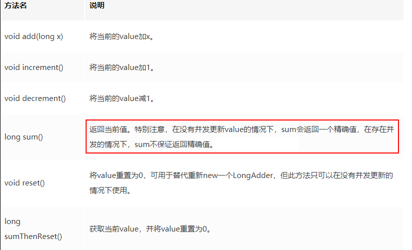
LongAdder只能用来计算加法，且从零开始计算；
LongAccumulator提供了自定义的函数操作：long类型的聚合器，需要传入一个long类型的二元操作，可以用来计算各种聚合操作，包括加乘等
使用示例如下：
1 | |
3、LongAdder高性能对比Code演示
1 | |
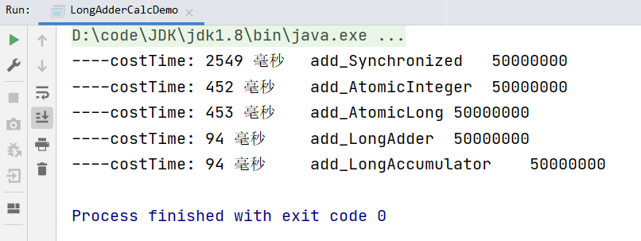
4、源码、原理分析
那么为什么LongAdder这么快呢？
那是因为LongAdder是Striped64的子类
Striped64有几个比较重要的成员函数：
1 | |
Striped64中一些变量或者方法的定义
- base：类似于AtomicLong中全局的value值。在没有竞争情况下数据直接累加到base上，或者cells扩容时，也需要将数据写入到base上。
- collide：表示扩容意向，false一定不会扩容，true可能会扩容。
- cellsBusy：初始化cells或者扩容cells需要获取锁，0表示无锁状态，1表示其他线程已经持有了锁。
- casCellsBusy（）：通过CAS操作修改cellsBusy的值，CAS成功代表获取锁，返回true
- NCPU：当前计算机CPU的数量，Cell数组扩容时会用到
- getProbe()：获取当前线程的hash值
- advanceProbe（）：重置当前线程的hash值
而所谓的Cell类，其实就是是 java.util.concurrent.atomic 下 Striped64 的一个内部类
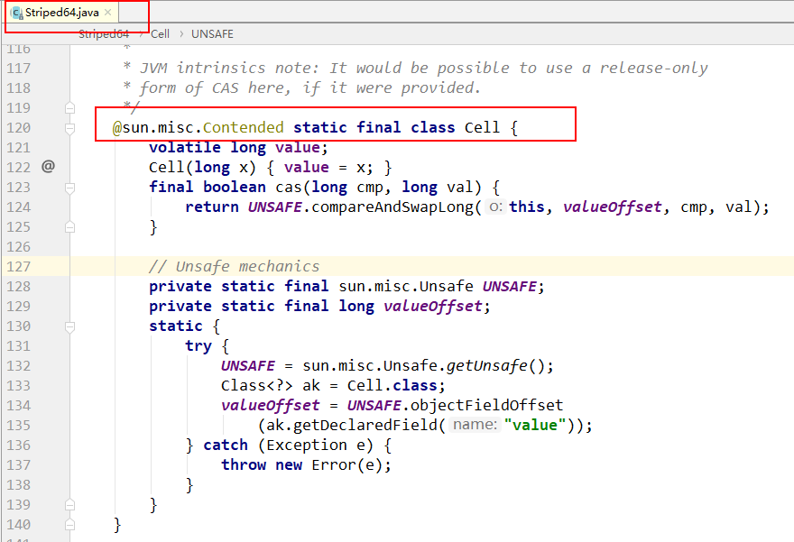
LongAdder的基本思路就是分散热点，将value值分散到一个Cell数组中，不同线程会命中到数组的不同槽中，各个线程只对自己槽中的那个值进行CAS操作，这样热点就被分散了，冲突的概率就小很多。如果要获取真正的long值，只需将各个槽中的变量值累加返回。
sum()会将所有Cell数组中的value和base累加作为返回值，核心的思想就是将之前AtomicLong一个value的更新压力分散到更多个value中去，从而降级更新热点
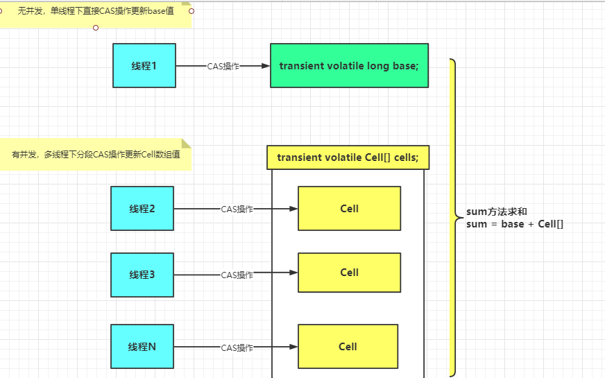
内部有一个base变量，一个Cell数组
base变量：非竞争条件下，直接累加到该变量上
cell数组：竞争条件下，累加到各个线程自己的槽Cell[i]中。
LongAdder在无竞争的情况，跟AtomicLong一样，对同一个base进行操作，当出现竞争关系时则是采用化整为零的做法，从空间换时间，用一个数组cells，将一个value拆分进这个数组cells。多个线程需要同时对value进行操作时候，可以对线程id进行hash得到hash值，再根据hash值映射到这个数组cells的某个下标，再对该下标所对应的值进行自增操作。当所有线程操作完毕，将数组cells的所有值和无竞争值base都加起来作为最终结果。
1 | |
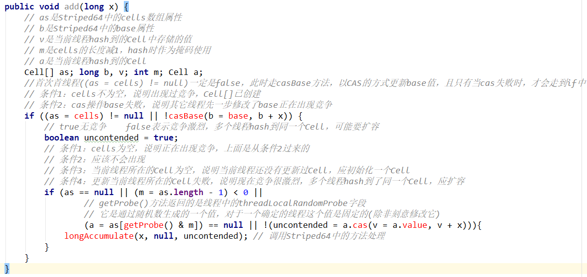

- 最初无竞争时只更新base
- 如果更新base失败后，首次新建一个Cell[]数组
- 当多个线程竞争同一个Cell比较激烈时，可能就要对Cell[]扩容
longAccumulate方法
- long x ：需要增加的值，一般默认都是1
- LongBinrayOperator fn ：默认传递的是null
- wasUncontended竞争标识，如果是false则代表有竞争。只有cells初始化之后，并且当前线程CAS竞争修改失败，才会是false。


接下来看总纲

上述代码首先给当前线程分配一个hash值，然后进入一个for(;;)自旋，这个自旋分为三个分支：
- CASE1：Cell[]数组已经初始化
- CASE2：Cell[]数组未初始化(首次新建)
- CASE3：Cell[]数组正在初始化中
接下来分开看：
1、刚刚要初始化Cell[]数组(首次新建)：
未初始化过Cell[]数组，尝试占有锁并首次初始化cells数组

如果上面条件都执行成功就会执行数组的初始化及赋值操作， Cell[] rs = new Cell[2]表示数组的长度为2，rs[h & 1] = new Cell(x) 表示创建一个新的Cell元素，value是x值，默认为1。h & 1类似于我们之前HashMap常用到的计算散列桶index的算法，通常都是hash & (table.len - 1)。同hashmap一个意思。
2、兜底
多个线程尝试CAS修改失败的线程会走到这个分支

该分支实现直接操作base基数，将值累加到base上，也即其它线程正在初始化，多个线程正在更新base的值。
3、Cell数组不再为空且可能存在Cell数组扩容
多个线程同时命中一个cell的竞争
总体代码如下：
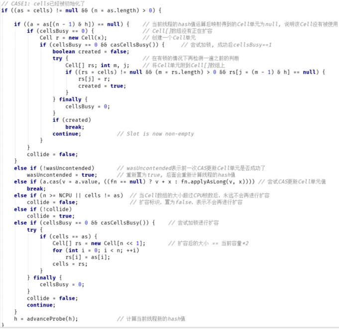
3.1
上面代码判断当前线程hash后指向的数据位置元素是否为空，如果为空则将Cell数据放入数组中，跳出循环。如果不空则继续循环。
3.2

3.3
说明当前线程对应的数组中有了数据，也重置过hash值，这时通过CAS操作尝试对当前数中的value值进行累加x操作，x默认为1，如果CAS成功则直接跳出循环。
3.4

3.5
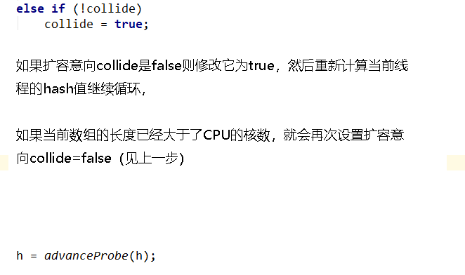
3.6

上述六部总结如下

sum方法
sum()会将所有Cell数组中的value和base累加作为返回值。核心的思想就是将之前AtomicLong一个value的更新压力分散到多个value中去，从而降级更新热点。
sum执行时，并没有限制对base和cells的更新(一句要命的话)。所以LongAdder不是强一致性的，它是最终一致性的。
首先，最终返回的sum局部变量，初始被复制为base，而最终返回时，很可能base已经被更新了，而此时局部变量sum不会更新，造成不一致。
其次，这里对cell的读取也无法保证是最后一次写入的值。所以，sum方法在没有并发的情况下，可以获得正确的结果。
5、使用总结
- AtomicLong
- 线程安全，可允许一些性能损耗，要求高精度时可使用
- 保证精度，性能代价
- AtomicLong是多个线程针对单个热点值value进行原子操作
- LongAdder
- 当需要在高并发下有较好的性能表现，且对值的精确度要求不高时，可以使用
- 保证性能，精度代价
- LongAdder是每个线程拥有自己的槽，各个线程一般只对自己槽中的那个值进行CAS操作
8.6 小总结
AtomicLong：
原理：CAS + 自旋、incrementAndGet
场景：低并发下的全局计算；AtomicLong能保证并发情况下计数的准确性，其内部通过CAS来解决并发安全性问题。
缺陷：高并发后性能急剧下降，这是因为AtomicLong的自旋造成瓶颈
N个线程CAS操作修改线程的值，每次只有一个成功过，其它N - 1失败，失败的不停的自旋直到成功，这样大量失败自旋的情况，一下子cpu就打高了。
LongAdder VS Atomic Long Performance
http://blog.palominolabs.com/2014/02/10/java-8-performance-improvements-longadder-vs-atomiclong/
LongAdder
原理：CAS + Base + Cell数组分散；空间换时间并分散了热点数据
场景：高并发下的全局计算
缺陷：sum求和后还有计算线程修改结果的话，最后结果不够准确
第十章 Java对象内存布局和对象头
Object object = new Object()，谈谈你对这句话的理解？一般而言，JDK8按照默认情况下，new一个对象占多少内存空间？
10.1 对象在堆内存中的存储布局
在HotSpot虚拟机里，对象在堆内存中的存储布局可以划分为三个部分：对象头、实际数据、对齐填充
10.1.1 对象头
对象头包含对象标记（Mark Word）和类元信息（又叫类型指针）

1、对象标记：
| 存储内容 | 标志位 | 状态 |
|---|---|---|
| 对象哈希码、对象分代年龄 | 01 | 未锁定 |
| 指向锁记录的指针 | 00 | 轻量级锁定 |
| 指向重量级锁的指针 | 10 | 膨胀（重量级锁定） |
| 空，不需要记录信息 | 11 | GC标记 |
| 偏向线程ID、偏向时间戳、对象分代年龄 | 01 | 可偏向 |
在64位系统中，MarkWord占了8个字节，类型指针占了8个字节，一共是16个字节。
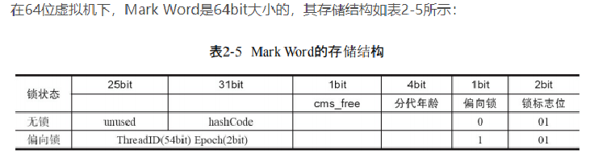
- 默认存储对象的HashCode、分代年龄和锁标志位等信息。
- 这些信息都是与对象自身定义无关的数据，所以MarkWord被设计成一个非固定的数据结构以便在极小的空间内存存储尽量多的数据。
- 它会根据对象的状态复用自己的存储空间，也就是说在运行期间MarkWord里存储的数据会随着锁标志位的变化而变化。
2、类元信息（类型指针）
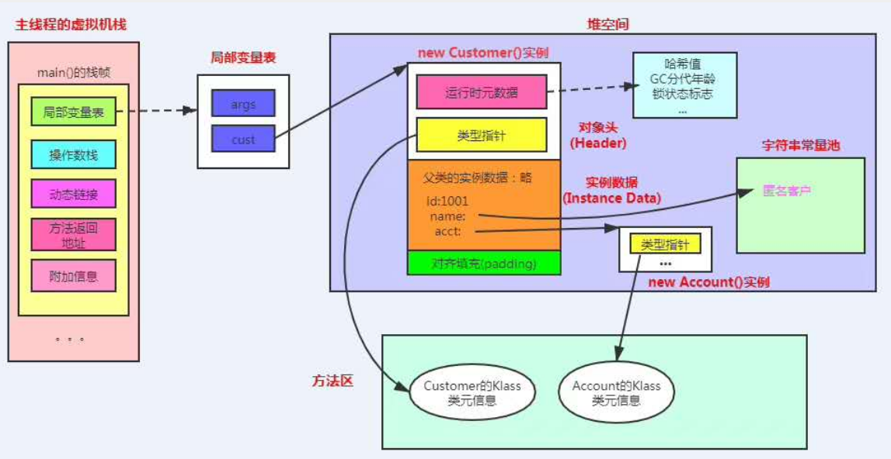
对象指向它的类元数据的指针，虚拟机通过这个指针来确定这个对象是哪个类的实例。
10.1.2 实例数据
存放类的属性（Field）数据信息，包括父类的属性信息，如果是数组的实例部分还包括数组的长度，这部分内存按4字节对齐。
10.1.3 对齐填充
虚拟机要求对象起始地址必须是8字节的整数倍。填充数据不是必须存在的，仅仅只是为了字节对齐，这部分内存按8字节补充对齐。
10.2 再说对象头的MarkWord
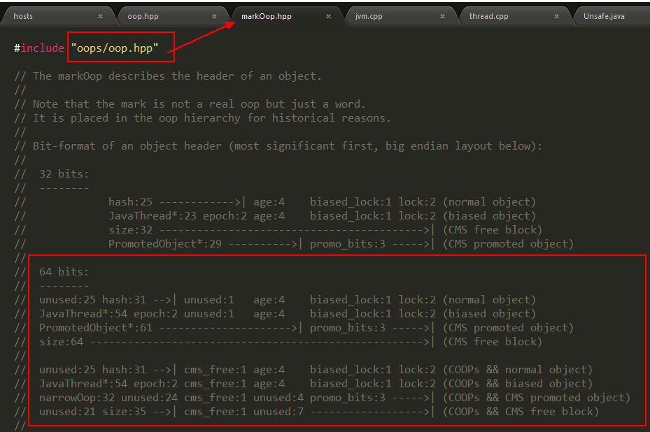
- hash：保存对象的哈希码
- age：保存对象的分代年龄
- biased_lock：偏向锁标识位
- lock：锁状态标识位
- JavaThread*：保存持有偏向锁的线程ID
- epoch：保存偏向时间戳
对象布局、GC回收和后面的锁升级就是对象标记MarkWord里面标志位的变化
10.3 聊聊Object obj = new Object()
http://openjdk.java.net/projects/code-tools/jol/
1 | |
示例代码如下所示：
1 | |
结果如下：
其中MarkWord8个字节，类型指针4个字节
| 名称 | 含义 |
|---|---|
| OFFSET | 偏移量，也就是这个字段位置所占用的byte数 |
| SIZE | 后面类型的字节大小 |
| TYPE | 是Class中定义的类型 |
| DESCRIPTION | 类型的描述 |
| VALUE | TYPE在内存中的值 |
注意到上述的类型指针只有4个字节，但是我们之前说类型指针应该是8个才对，这是因为JVM默认开启了类型指针的压缩，来节省空间
使用-XX:-UseCompressedClassPointers来关闭默认开启的类型指针压缩
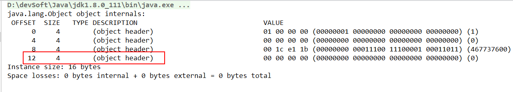
如果换成其他的对象：
1 | |
结果如下：
第十一章 Synchronized与锁升级
源码下载：jdk8u/jdk8u/hotspot: log (java.net)
- 整体逻辑：无锁=》偏向锁=》轻量级锁=》重量级锁
- 偏向锁无冲突逻辑；发生冲突之后偏向锁的撤销，到安全点的两个分支逻辑；hashcode对偏向锁的影响；批量重偏向和批量撤销；匿名偏向
- 轻量级锁基本逻辑；LR；发生竞争之后轻量级锁的膨胀
- 重量级锁，cxq、entrylist、waitset；自旋；mutex、futex
11.1 锁升级基本概念
用锁能够实现数据的安全性，但是会带来性能下降。无锁能够基于线程并行提升程序性能，但是会带来安全性下降。
synchronized锁：由对象头中的Mark Word根据锁标志位的不同而被复用及锁升级策略
在Java5之前，只有Synchronized，这个是操作系统级别的重量级操作。重量级锁，假如锁的竞争比较激烈的话，性能下降。Java5之前，用户态和内核态之间的切换。
Java的线程是映射到操作系统原生线程之上的。如果要阻塞或唤醒一个线程就需要操作系统介入，需要用户态和核心态之间切换，这种切换会消耗大量的系统资源，因为用户态与内核态都有各自专用的内存空间，专用的寄存器等，用户态切换至内核态需要传递给许多变量、参数给内核，内核也需要保护好用户态在切换时的一些寄存器值、变量等，以便内核态调用结束后切换回用户态继续工作。
在Java早期版本中，Synchronized属于重量级锁，效率低下，因为监视器锁（monitor）是依赖于底层的操作系统的Mutex Lock来实现的，挂起线程和恢复线程都需要转入内核态去完成，阻塞或唤醒一个Java线程需要操作系统切换CPU状态来完成，这种状态切换需要耗费处理器时间，如果同步代码块中内容过于简单，这种切换的时间可能比用户代码执行的时间还长，时间成本相对较高，这也是为什么早期的synchronized效率低的原因。
Java6之后，为了减少获得锁和释放锁所带来的性能消耗，引入了轻量级锁和偏向锁。
Monitor与Java对象以及线程是如何关联的？
- 如果一个Java对象被某个线程锁住，则该Java对象的MarkWord字段中LockWord指向monitor的起始地址
- Monitor的Owner字段会存放拥有相关联对象锁的线程id
Motex Lock的切换需要从用户态转换到核心态，因此状态转换需要耗费很多的处理器时间。
三种多线程访问情况：
- 只有一个线程来访问
- 多个线程交替访问
- 竞争激烈，多个线程来访问
升级流程：synchronized用的锁是存在Java对象头里的MarkWord中，锁升级功能主要依赖MarkWord中锁标志位和释放偏向锁标志位
11.2 无锁
1 | |

11.3 偏向锁
默认情况下，偏向锁会有一个时延，默认四秒。
因为虚拟机自己会有一些默认的启动的线程，里面会有很多的sync代码。这些代码在启动的时候肯定会有竞争，而如果一开始就可以使用偏向锁，那么就会造成偏向锁不断的进行锁撤销和锁升级的操作，效率低下。
在项目刚启动的时候，new出来的对象默认都是无锁的状态（在这个阶段，发生对于无锁状态的竞争会直接进入轻量级锁），但是在经过了偏向锁的时延之后再去创建的对象默认都是偏向锁，但是这个偏向锁其实叫做匿名偏向锁，它对应的对象头的markword中的threadId是0。
当一段同步代码一直被同一个线程多次访问，由于只有一个线程那么该线程在后续访问时便会自动获得锁
HotSpot的作者经过研究发现，大多数情况下：多线程的情况下，锁不仅不存在多线程竞争，还存在锁由同一线程多次获得的情况。偏向锁就是在这种情况下出现的，它的出现是为了解决只有在一个线程执行同步时提高性能。
那么只需要在锁的第一次被拥有的时候，记录下偏向线程ID。这样偏向线程就一直持有着锁（后续这个线程进入和退出这段加了同步锁的代码块时，不需要再次加锁和释放锁。而是直接比较对象头里面是否存储了指向当前线程的偏向锁。
如果相等表示偏向锁时偏向于当前线程的，就不需要再次尝试获得锁了，直到竞争发生才释放锁。以后每次同步，检查锁的偏向线程ID与当前线程ID是否一致，如果一致直接进入同步。无需每次加锁解锁都去CAS更新对象头。如果自始至终使用锁的线程只有一个，很明显偏向锁几乎没有额外开销，性能极高。
假如不一致意味着发生了竞争，锁已经不是总是偏向于同一线程了，这时候可能需要升级位轻量级锁，才能保证线程间公平竞争锁。偏向锁只有遇到其他线程尝试竞争偏向锁时，持有偏向锁的线程才会释放锁，线程是不会主动释放偏向锁的
开启偏向锁
实际上偏向锁再JDK1.6之后是默认开启的，但是启动时间 有延迟，所以需要添加参数-XX:BiasedLockingStartupDelay = 0，让其在程序启动时立刻启动。
开启偏向锁：
-XX:+UseBiasedLocking(开启) -XX:BiasedLockingStartupDelay = 0（关闭延迟）
关闭偏向锁：关闭之后程序默认会直接进入轻量级锁状态
-XX:-UseBiasedLocking
HashCode对偏向锁的影响
对于偏向锁而言，它其实无法存储对象的hashcode，因此如果对象在创建之后使用了hashcode方法， 该对象便无法成为偏向锁了；如果持有偏向锁的线程在同步代码块中调用了锁的hashcode，那么该锁就会立马升级为重量级锁
线程多了之后
当有另外线程逐步来竞争锁的时候，就不能再使用偏向锁了，要升级为轻量级锁。竞争线程尝试CAS更新对象头失败，会等待到全局安全点（此时不会执行任何代码）撤销偏向锁。
偏向锁的撤销
偏向锁使用一种等到竞争出现才释放锁的机制，只有当其他线程竞争锁时，持有偏向锁的原来线程才会被撤销。
撤销需要等待全局安全点(该时间点上没有字节码正在执行)，同时检查持有偏向锁的线程是否还在执行：
① 第一个线程正在执行synchronized方法(处于同步块)，它还没有执行完，其它线程来抢夺，该偏向锁会被取消掉并出现锁升级。此时轻量级锁由原持有偏向锁的线程持有，继续执行其同步代码，而正在竞争的线程会继续CAS尝试获得该轻量级锁。
② 第一个线程执行完成synchronized方法(退出同步块)，则将对象头设置成无锁状态并撤销偏向锁，但是该锁将无法变成偏向锁了，如果再有线程来获取该无锁，将会直接升级成轻量级锁。
除此之外，其实如果调用wait/notify，也会使得偏向锁或轻量级锁强制升级为重量级锁
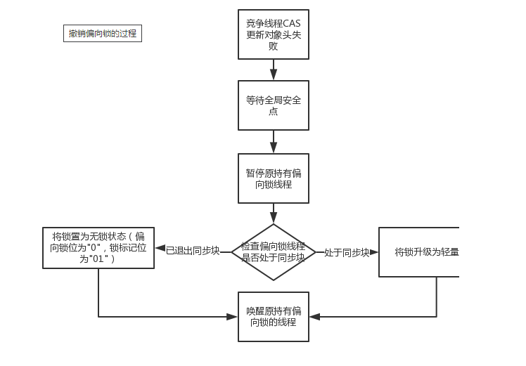
批量重偏向和批量撤销
对于一个类（源码中获取锁对象的类的元数据 Klass* k = o->klass()），单个偏向撤销的计数达到20，就会进行批量重偏向；当每次发生批量重偏向的时候，会将class的epoch加1，同时遍历JVM中所有线程的栈，找到该class所有正在处于加锁状态的偏向锁，将其epoch字段改为新值。下次加锁的时候，发现当前对象的epoch和class的epoch不想等，那就算当前已经偏向了其他线程，也不会执行撤销操作，而是直接通过CAS操作将其Mark Word的Thread Id 改成当前线程Id。
理解：如果一个地区（class）所拥有的夫妻（对象）经常发生离婚（撤销），为了节约偏向锁撤销带来的性能损耗问题（也就是认为该地区有问题，给他们一次换老公的机会，也就是可重偏向），当然只针对于之后的对象。
同样，如果这个地区换过老公了，离婚率还是很高，直接就别结婚了，也就是批量撤销逻辑，直接禁止成为偏向锁。
如果距离上次批量重偏向25s内，并且计数达到40，就会发生批量撤销，将该class标记为不可偏向，因为此时JVM会认为该class的使用场景存在多线程竞争，之后对于该class的锁，就直接走轻量级锁的逻辑。
每隔25秒（>=），会重置在20-40内的计数，这就意味着可以发生多次批量重偏向
对于一个类来说，批量撤销只会发生过一次，因为批量撤销之后，该类就禁用了可偏向属性，后面该类的对象都是不可偏向的，包括新建的，因此都不是偏向锁了自然无法批量撤销。
JVM内部为每个类维护了一个偏向锁revoke计数器，对偏向锁撤销进行计数，当这个值达到指定阈值时，JVM会认为这个类的偏向锁有问题，需要重新偏向(rebias),对所有属于这个类的对象进行重偏向的操作成为 批量重偏向(bulk rebias)。在做bulk rebias时，会对这个类的epoch的值做递增，这个epoch会存储在对象头中的epoch字段。在判断这个对象是否获得偏向锁的条件是:markword的 biased_lock:1、lock:01、threadid和当前线程id相等、epoch字段和所属类的epoch值相同，如果epoch的值不一样，要么就是撤销偏向锁、要么就是rebias； 如果这个类的revoke计数器的值继续增加到一个阈值，那么jvm会认为这个类不适合偏向锁，就需要进行bulk revoke操作
11.4 轻量级锁
有线程来参与锁的竞争，但是获取锁的冲突时间非常短
加锁过程：
在代码即将进入 同步块的时候，如果此同步对象没有被锁定（锁标志位为“01”状态），虚拟机首先将在当前线程的栈帧中建立一个名为锁记录（Lock Record）的空间，用于存储锁对象目前的Mark Word的拷贝（官方为 这份拷贝加了一个Displaced前缀，即Displaced Mark Word）
然后，虚拟机将使用CAS操作尝试把对象的Mark Word更新为指向Lock Record的指针。如果这个 更新动作成功了，即代表该线程拥有了这个对象的锁，并且对象Mark Word的锁标志位（Mark Word的 最后两个比特）将转变为“00”，表示此对象处于轻量级锁定状态。
如果这个更新操作失败了，那就意味着至少存在一条线程与当前线程竞争获取该对象的锁。虚拟 机首先会检查对象的Mark Word是否指向当前线程的栈帧，如果是，说明当前线程已经拥有了这个对 象的锁，那直接进入同步块继续执行就可以了，否则就说明这个锁对象已经被其他线程抢占了。如果 出现两条以上的线程争用同一个锁的情况，那轻量级锁就不再有效，必须要膨胀为重量级锁，锁标志 的状态值变为“10”，此时Mark Word中存储的就是指向重量级锁（互斥量）的指针，后面等待锁的线 程也必须进入阻塞状态
解锁过程
如果对象的 Mark Word仍然指向线程的锁记录，那就用CAS操作把对象当前的Mark Word和线程中复制的Displaced Mark Word替换回来。假如能够成功替换，那整个同步过程就顺利完成了；如果替换失败，则说明有 其他线程尝试过获取该锁，就要在释放锁的同时，唤醒被挂起的线程。
11.5 重锁
整个锁膨胀的逻辑实际是获得一个ObjectMonitor对象监视器，通过自旋实现。
对于重量级锁的竞争逻辑：
- 通过CAS将monitor的 _owner字段设置为当前线程，如果设置成功，则直接返回
- 如果之前的 _owner指向的是当前的线程，说明是重入，执行 _recursions++增加重入次数
- 如果当前线程获取监视器锁成功，将 _recursions设置为1， _owner设置为当前线程
- 如果获取锁失败，则等待锁释放
当然，如果获取锁失败，就需要通过自旋的方式等待锁释放，其实就是将线程封装成ObjectWaiter对象的node，然后通过自旋将push到cxq队列，加到该队列之后，继续通过自旋尝试获取锁，如果自旋之后还是未能获取锁，就只能通过park将当前线程挂起，等待被唤醒；
当线程释放锁的时候，会根据唤醒策略，从cxq队列或entrylist中挑选一个线程unpark唤醒。
在唤醒等待队列的时候，会先将owner设置为null，如果这个时候有其他线程进入会获得该锁，也就是owner不为null，这其实也是非公平锁的体现，它会给刚进入，但是还没有进入等待队列等待的线程一次抢占的机会。
如果没有线程能珍惜这次机会，就根据不同的策略从cxq或者entrylist中取出一个线程进行唤醒。但是该唤醒的线程被恢复挂起，恢复之后也不一定能够运行用户代码，不保证一定能获取到。
11.6 小总结

synchronized锁升级过程总结：一句话，就是先自旋，不行再阻塞。
实际上是把之前的悲观锁(重量级锁)变成在一定条件下使用偏向锁以及使用轻量级(自旋锁CAS)的形式
synchronized在修饰方法和代码块在字节码上实现方式有很大差异，但是内部实现还是基于对象头的MarkWord来实现的。
JDK1.6之前synchronized使用的是重量级锁，JDK1.6之后进行了优化，拥有了无锁->偏向锁->轻量级锁->重量级锁的升级过程，而不是无论什么情况都使用重量级锁。
**偏向锁:**适用于单线程适用的情况，在不存在锁竞争的时候进入同步方法/代码块则使用偏向锁。
轻量级锁：适用于竞争较不激烈的情况(这和乐观锁的使用范围类似)， 存在竞争时升级为轻量级锁，轻量级锁采用的是自旋锁，如果同步方法/代码块执行时间很短的话，采用轻量级锁虽然会占用cpu资源但是相对比使用重量级锁还是更高效。
重量级锁：适用于竞争激烈的情况，如果同步方法/代码块执行时间很长，那么使用轻量级锁自旋带来的性能消耗就比使用重量级锁更严重，这时候就需要升级为重量级锁。
11.7 JIT编译器对锁的优化
Just In Time Compiler，一般翻译为即时编译器
锁消除
1 | |
锁粗化
1 | |
11.8 常见面试题
问题1：ObjectMonitor和AQS有什么异同
ObjectMonitor和AQS（AbstractQueuedSynchronizer）都是依据管程模型的原理开发的。所以在整体架构上基本相同，都有共享变量和等待队列，在实现上又有区别。
1）共享变量，ObjectMonitor中使用owner做共享变量，通过CAS设置owner为当前线程来抢锁。而AQS中的共享变量是一个整形的status。因为这一区别，导致ObjectMonitor需要定义一个计数器来记录锁重入次数，而AQS需要额外定义个exclusiveOwnerThread来记录当前持有锁的线程。
2）等待队列，ObjectMonitor等待队列使用了两个队列，cxq和entryList，而AQS仅使用了一个等待队列。
3）条件同步，AQS支持在同一个锁上创建多个条件变量，wait/notify更加灵活和精准。而ObjectMonitor只有一个waitset，所有线程共享一个条件变量。
4）Share模式，AQS的Share模式可以使实现读写锁更加简单。
问题2: 为什么ObjectMonitor需要cxq和entryList两个等待队列
ObjectMonitor中加解锁、wait/notify都涉及对等待队列的进出队操作。如果使用一个队列冲突的概率会加大，耗费系统资源。分成2个队列后，出入队EntryList队列只有加锁的情况才会操作，不需要CAS和自旋，减少了资源消耗。
第十二章 AbstractQueuedSynchronizer之AQS
抽象的队列同步器
是用来构建锁或者其它同步器组件的重量级基础框架及整个JUC体系的基石，通过内置的FIFO队列来完成资源获取线程的排队工作，并通过一个int变量表示持有锁的状态
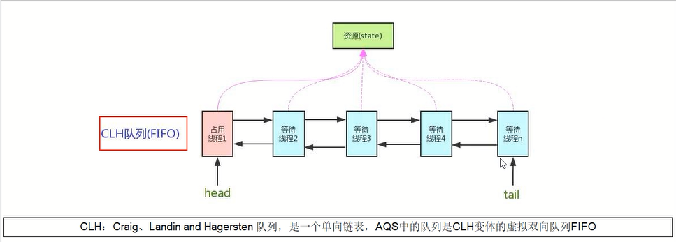
和AQS有关的内容如下图所示
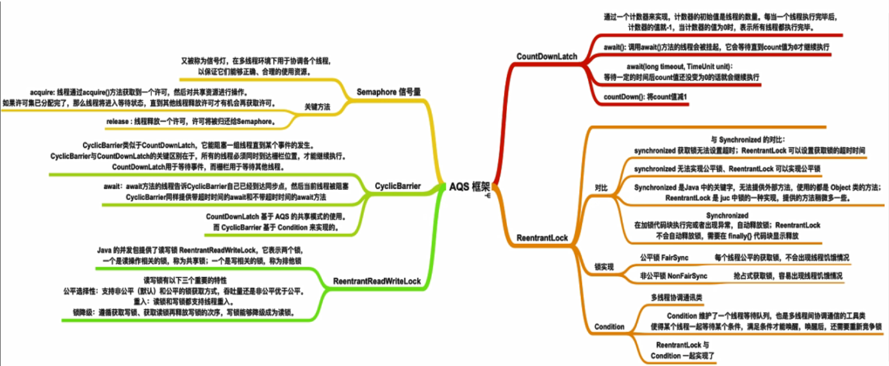
锁，面向锁的使用者，定义了程序员和锁交互的使用层API，隐藏了实现细节，调用就可以
同步器，面向锁的实现者，比如java并发大神Douglee提出了统一规范并简化了锁的实现，屏蔽了同步状态管理、阻塞线程排队和通知、唤醒机制等。
12.1 能干嘛
加锁会导致阻塞，有阻塞就需要排队，实现排队必然需要有某种形式的队列来管理
抢到资源的线程直接使用办理业务，抢占不到资源的线程的必然涉及一种排队等候机制，抢占资源失败的线程继续去等待（类似办理窗口都满了，暂时没有受理窗口的顾客只能去候客区排队等候），仍然保留获取锁的可能且获取锁流程仍在继续（候客区的顾客也在等着叫号，轮到了再去受理窗口办理业务）。
如果共享资源被占用，就需要一定的阻塞等待唤醒机制来保证锁分配。这个机制主要用的是CLH队列的变体实现的，将暂时获取不到锁的线程加入到队列中，这个队列就是AQS的抽象表现。它将请求共享资源的线程封装成队列的结点（Node），通过CAS、自旋以及LockSupport.park()的方式，维护state变量的状态，使并发达到同步的效果。
12.2 AQS初步
2
3
4
5
6
7
8
9
10
11
12
13
14/**
* Provides a framework for implementing blocking locks and related
* synchronizers (semaphores, events, etc) that rely on
* first-in-first-out (FIFO) wait queues. This class is designed to
* be a useful basis for most kinds of synchronizers that rely on a
* single atomic {@code int} value to represent state. Subclasses
* must define the protected methods that change this state, and which
* define what that state means in terms of this object being acquired
* or released. Given these, the other methods in this class carry
* out all queuing and blocking mechanics. Subclasses can maintain
* other state fields, but only the atomically updated {@code int}
* value manipulated using methods {@link #getState}, {@link
* #setState} and {@link #compareAndSetState} is tracked with respect
* to synchronization.依靠单个原子来表示状态，通过占用和释放方法改变状态值
AQS使用一个volatile的int类型的成员变量来表示同步状态，通过内置的FIFO队列来完成资源获取的排队工作将每条要去抢占资源的线程封装成一个Node节点来实现锁的分配，通过CAS完成对State值的修改
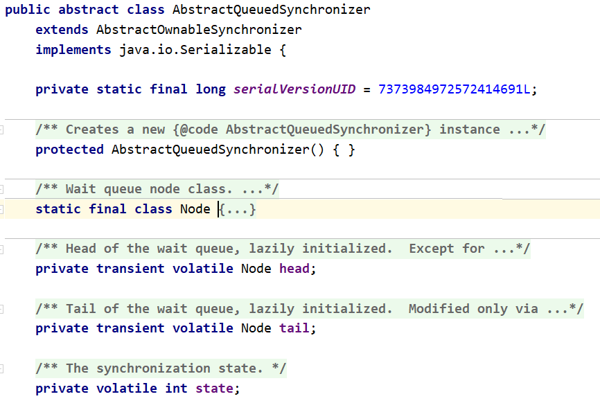
对于state变量来说，如果为0就是相当于自由状态，线程可以进行锁的抢占，类似于银行办理业务的受理窗口可以进行办理；如果大于0，有人占用窗口，线程得进行阻塞等待
CLH队列是一个双向队列，从尾部入队，头部出队，即AQS就是state变量 + CLH双端Node队列
Node类在AQS类内部：
1 | |
Node的waitStatus就是等候区其他顾客（其他线程）的等待状态，队列中每一个排队的个体就是一个Node
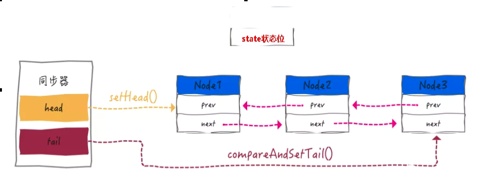
AQS底层是用LockSupport.park()进行排队的
12.3 源码解析
我们以ReentrantLock为例进行解读
1 | |
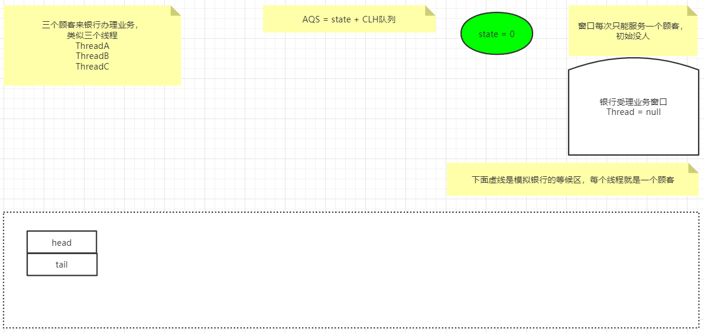
Lock接口的实现类基本上都是通过聚合了一个队列同步器的子类完成线程访问控制的
对于公平和非公平锁，比较他们的tryAcqure()方法， 其实差别就在于非公平锁获取锁时比公平锁中少了一个判断!hasQueuedPredecessors()，该方法中判断了是否需要排队。
公平锁：先来先到，线程在获取锁时，如果这个锁的等待队列中已经有线程在等待，那么当前线程就会进入等待队列中
非公平锁：不管是否有等待队列，如果可以获取锁，则立刻占有锁对象。也就是说队列的第一个排队线程在unpark，之后还是需要竞争锁（存在线程竞争的情况下）
1 | |
首先看非公平锁的lock方法
1 | |
如果是第一个线程进来，一开始status为0，因此就能够通过CAS变成1，因此进入if里面进行抢占，在我们的银行例子中，A线程就能抢占到锁。其中setExclusiveOwnerThread设置该锁是被当前线程所占领，即A线程
此时状态如下：
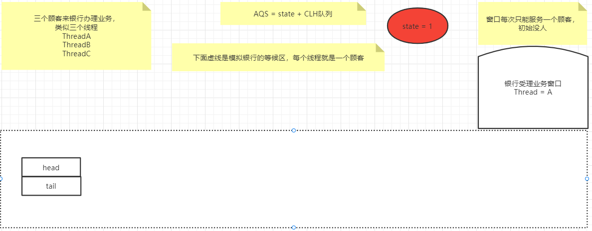
因为A线程设置的时候阻塞了20分钟，因此此时B线程进来抢夺锁，发现state已经被占用了，就执行else里面的acquire(1)方法
1 | |
其中tryAcquire方法在父类中的实现是抛出一个异常，这是设计模式的内容，旨在强制让子类重写该方法
本例我们使用的是ReentrantLock中的非公平锁，代码如下：
1 | |
当线程B进入nonfairTryAcquire方法时，发现还是无法抢到锁，就返回false，继续执行接下来的方法，也就是addWaiter(Node.EXCLUSIVE,arg)；
1 | |
第一次进入，tail指向null，也就是CLH队列中还没有线程，就执行enq方法
1 | |
再次判断tail指向null，因此新建一个Node节点，让head指向该Node，然后让tail指向head，也就是这个新建的Node，
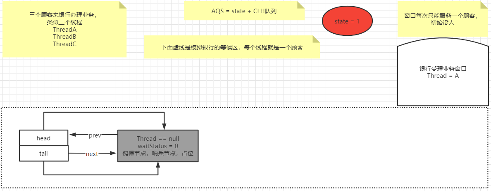
双向链表中，第一个节点为虚节点，也叫哨兵节点，其实并不存储任何信息，只是占位。真正的第一个有数据的节点，是从第二个节点开始的。
此时方法还没结束，继续下一次循环，注意的是，此时tail已经不为null了，进入else中，而此时的node就是线程B所在的节点，将线程B加入到CLH队列之中。
然后这时候C线程也进来了，重复线程B的动作，但是在addWaiter方法能进if里面， 此时将线程C也添加进CLH队列中
接着执行下一个方法：
1 | |
如果此时A线程仍然没有执行完成，线程B会继续进行抢夺，抢夺失败后执行shouldParkAfterFailedAcquire方法
1 | |
如果前驱节点的waitstatus是SINGNAL状态（-1），即该方法会返回true，程序会继续向下执行parkAndCheckInterrupt方法，用于将线程挂起。
但是此时B节点的前驱节点的waitStatus是0，因此往下走，然后将B前面的哨兵节点的waitstatus的值变成了-1，出去该方法后还会进行第二次循环，然后发现waitstatus是SINGNAL了，就返回true，进行阻塞
1 | |
也就是说此时线程A还在办理当中，线程B和线程C在CLH队列中进行等候，到这里的时候B线程和C线程就已经被阻塞了。
当线程A办理完成的时候，会释放锁，然后status变成了0，这时候会调用unlock方法，然后执行release方法，将哨兵节点的waitstatus变成0，然后唤醒线程B，接着就会返回到parkAndCheckInterrupt方法，因为没有什么中断异常，方法返回false，继续acquireQueued方法里面的for循环里面的自旋，然后发现这次执行tryAcquire方法后抢到了锁，就让头节点指向线程B
1 | |
线程B抢到锁之后，就让线程B变成哨兵节点
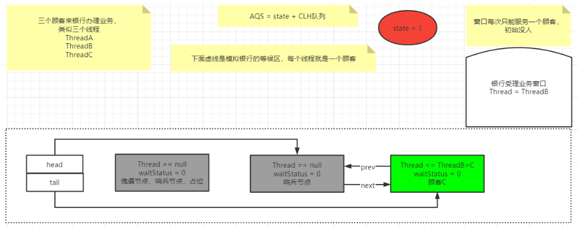
原来的哨兵节点就被GC回收掉了
12.4 小细节
AQS里面的state有三个状态，0表示没占用，1表示被占用，大于1是可重入锁
如果AB两个线程进来了以后，CLH中总共有三个Node节点，因为还包含哨兵节点。
第十三章 ReentrantLock、ReentrantReadWriteLock、StampedLock讲解
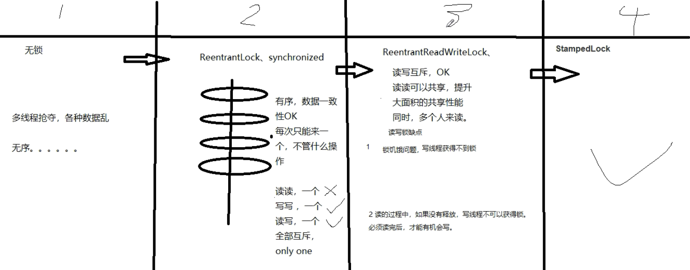
面试题：
- 你知道Java里面有哪些锁吗？
- 你说你用过读写锁，锁饥饿问题是什么
- 有没有比读写锁更快的锁
- StampedLock知道吗
- ReentrantReadWriteLock有锁降级机制策略你知道吗
13.1 读写锁
并不是真正意义上的读写分离，它只允许读读共存，而读写和写写依然是互斥的
大多实际场景是读读线程间并不存在互斥关系，只有读写线程或写写线程间的操作需要互斥的，因此就引入了ReentrantReadWriteLock。
一个读写锁同时只能存在一个写锁，但是可以存在多个读锁，但是不能同时存在写锁和读锁，也即一个资源可以被多个读操作访问或者一个写操作访问，但是两者不能同时进行
只有在读多写少的情景下，读写锁才具有较高的性能体现。
1、特点
可重入、读写分离
2、无锁无序 → 加锁 → 读写锁演变复习
1 | |
3、从写锁→读锁，ReentrantReadWriteLock可以降级
锁的严苛程度变强叫做升级，反之叫做降级
锁降级：遵循获取写锁 → 再获取读锁 → 再释放写锁的次序，写锁能够降级成为读锁。
如果一个线程占有了写锁，在不释放写锁的情况下，它还能占有读锁，即写锁降级为读锁。
Java8 官网说明：重入还允许通过获取写入锁定，然后读取锁然后释放写锁从写锁到读取锁,
但是，从读锁定升级到写锁是不可能的。
锁降级是为了让当前线程感知到数据的变化，目的是保证数据可见性
1 | |
如果有线程在读，那么写线程是无法获取写锁的，是悲观锁的策略
4、不可锁升级
线程获取读锁是不能直接升级为写入锁的。
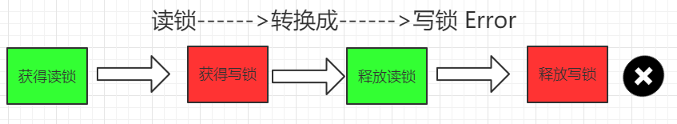
在ReentrantReadWriteLock中，当读锁被使用时，如果有线程尝试获取写锁，该写线程会被阻塞。
所以，需要释放所有读锁，才可获取写锁，
5、写锁和读锁是互斥的
写锁和读锁是互斥的（这里的互斥是指线程间的互斥，当前线程可以获取到写锁又获取到读锁，但是获取到了读锁不能继续获取写锁），这是因为读写锁要保持写操作的可见性。
因为，如果允许读锁在被获取的情况下对写锁的获取，那么正在运行的其他读线程无法感知到当前写线程的操作。
因此，分析读写锁ReentrantReadWriteLock，会发现它有个潜在的问题：
读锁全完，写锁有望；写锁独占，读写全堵；
如果有线程正在读，写线程需要等待读线程释放锁后才能获取写锁；
即ReadWriteLock读的过程中不允许写，只有等待线程都释放了读锁，当前线程才能获取写锁，
也就是写入必须等待，这是一种悲观的读锁，o(╥﹏╥)o，人家还在读着那，你先别去写，省的数据乱。
================================后续讲解StampedLock时再详细展开=======================
分析StampedLock(后面详细讲解)，会发现它改进之处在于：
读的过程中也允许获取写锁介入(相当牛B，读和写两个操作也让你“共享”(注意引号))，这样会导致我们读的数据就可能不一致！
所以，需要额外的方法来判断读的过程中是否有写入，这是一种乐观的读锁，O(∩_∩)O哈哈~。
显然乐观锁的并发效率更高，但一旦有小概率的写入导致读取的数据不一致，需要能检测出来，再读一遍就行。
6、源码总结
锁降级 下面的示例代码摘自ReentrantWriteReadLock源码中：
ReentrantWriteReadLock支持锁降级，遵循按照获取写锁，获取读锁再释放写锁的次序，写锁能够降级成为读锁，不支持锁升级。
解读在最下面:
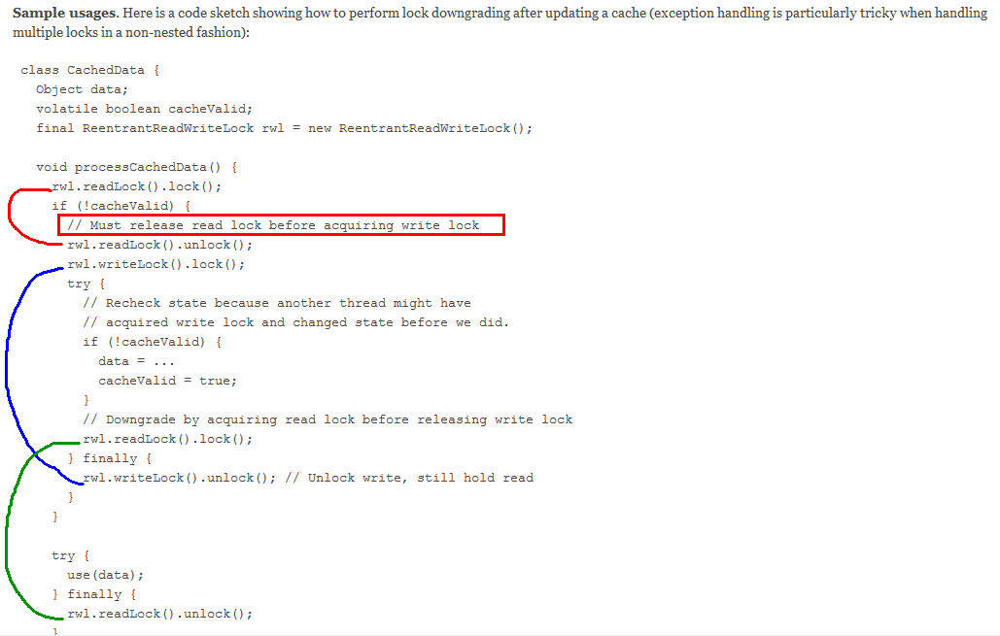
- 代码中声明了一个volatile类型的cacheValid变量，保证其可见性。
- 首先获取读锁，如果cache不可用，则释放读锁，获取写锁，在更改数据之前，再检查一次cacheValid的值，然后修改数据，将cacheValid置为true，然后在释放写锁前获取读锁；此时，cache中数据可用，处理cache中数据，最后释放读锁。这个过程就是一个完整的锁降级的过程，目的是保证数据可见性。
如果违背锁降级的步骤 ：如果当前的线程C在修改完cache中的数据后，没有获取读锁而是直接释放了写锁，那么假设此时另一个线程D获取了写锁并修改了数据，那么C线程无法感知到数据已被修改，则数据出现错误。
如果遵循锁降级的步骤 ：线程C在释放写锁之前获取读锁，那么线程D在获取写锁时将被阻塞，直到线程C完成数据处理过程，释放读锁。这样可以保证返回的数据是这次更新的数据，该机制是专门为了缓存设计的。
7、持有写锁了，再获得读锁的意义
如果我们一开始使用写锁，将一个数据设为5，我们希望外面调用5这个数据，但是，多线程可能导致又一个写进程进来，将5改为88，这样，对外的数据就不是5而是88了。
也就是说，线程1写完了，我们希望大家马上拿到1.0版本，你们立刻来读取。这样就要立刻加读锁，在读的过程中，不可以让其他写线程进来修改数据。保证我们的1.0版本可以被其他线程完整读取后再进行下一次修改。
写后立即可以读，感知到数据的变化
实战代码如下：
1 | |
13.2 邮戳锁
1、是什么
StampedLock是JDK1.8中新增的一个读写锁，也是对JDK1.5的读写锁ReentrantReadWriteLock的优化。
也叫票据锁
stamp（戳记，long类型）：代表了锁的状态，当stamp返回零的时候，表示线程获取锁失败。并且，当释放锁或者转换锁的时候，都要传入最初获取的stamp值。
2、饥饿锁问题
ReentrantReadWriteLock实现了读写分离，但是一旦读操作比较多的时候，想要获取写锁就变得比较困难了，
假如当前1000个线程，999个读，1个写，有可能999个读取线程长时间抢到了锁，那1个写线程就悲剧了
因为当前有可能会一直存在读锁，而无法获得写锁，根本没机会写，o(╥﹏╥)o
使用”公平“策略可以一定程度上缓解这个问题：new ReentrantReadWriteLock(true)，但是以牺牲系统吞吐量为代价的。
这就导致了StampedLock类的乐观读锁闪亮登场；
ReentrantReadWriteLock
允许多个线程同时读，但是只允许一个线程写，在线程获取到写锁的时候，其他写操作和读操作都会处于阻塞状态，读锁和写锁也是互斥的，所以在读的时候是不允许写的，读写锁比传统的synchronized速度要快很多，
原因就是在于ReentrantReadWriteLock支持读并发
StampedLock横空出世
ReentrantReadWriteLock的读锁被占用的时候，其他线程尝试获取写锁的时候会被阻塞。但是，StampedLock采取乐观获取锁后，其他线程尝试获取写锁时不会被阻塞，这其实是对读锁的优化，所以，在获取乐观读锁后，还需要对结果进行校验。
3、StampedLock的特点
- 所有获取锁的方法，都返回一个邮戳（Stamp），Stamp为零表示获取失败，其余都表示成功；
- 所有释放锁的方法，都需要一个邮戳（Stamp），这个Stamp必须是和成功获取锁时得到的Stamp一致；
- StampedLock是不可重入的，危险(如果一个线程已经持有了写锁，再去获取写锁的话就会造成死锁)
- 三种访问模式:
- Reading（读模式）：功能和ReentrantReadWriteLock的读锁类似
- Writing（写模式）：功能和ReentrantReadWriteLock的写锁类似
- Optimistic reading（乐观读模式）：无锁机制，类似于数据库中的乐观锁，支持读写并发，很乐观认为读取时没人修改，假如被修改再实现升级为悲观读模式
乐观读模式code演示：读的过程中也允许获取写锁介入
1 | |
4、StampedLock的缺点
- StampedLock 不支持重入，没有Re开头
- StampedLock 的悲观读锁和写锁都不支持条件变量（Condition），这个也需要注意。
- 使用 StampedLock一定不要调用中断操作，即不要调用interrupt() 方法
- 如果需要支持中断功能，一定使用可中断的悲观读锁 readLockInterruptibly()和写锁writeLockInterruptibly()